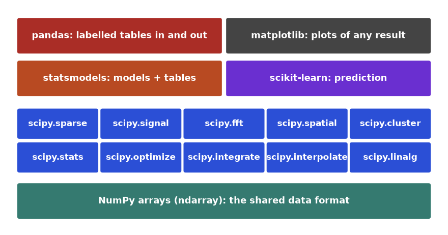
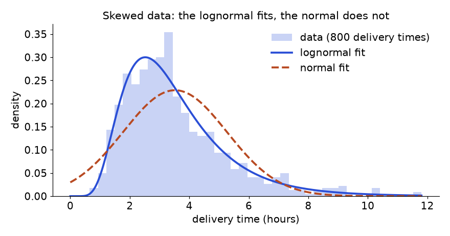
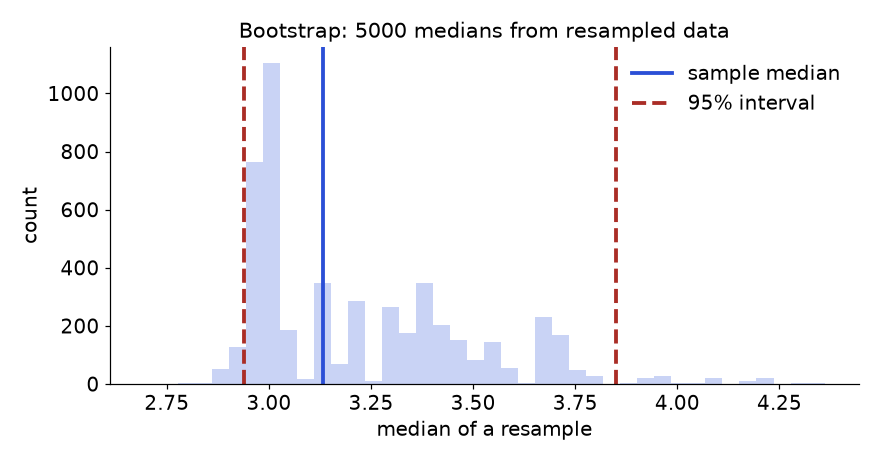
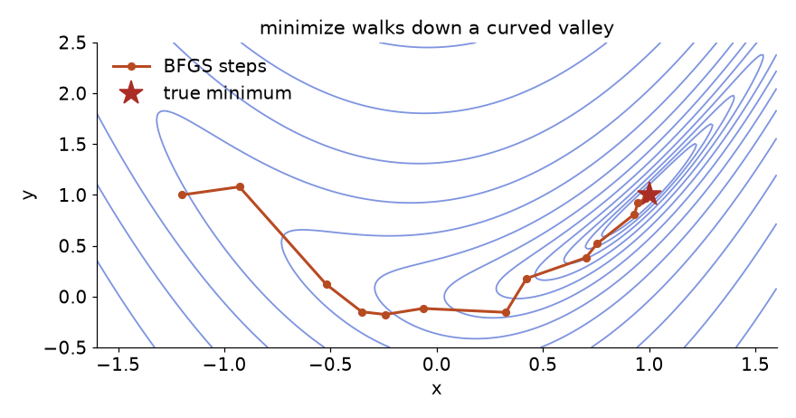
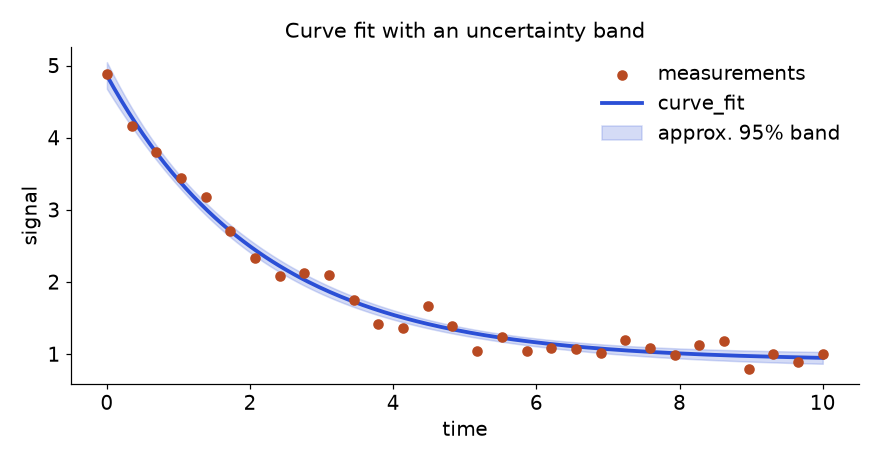
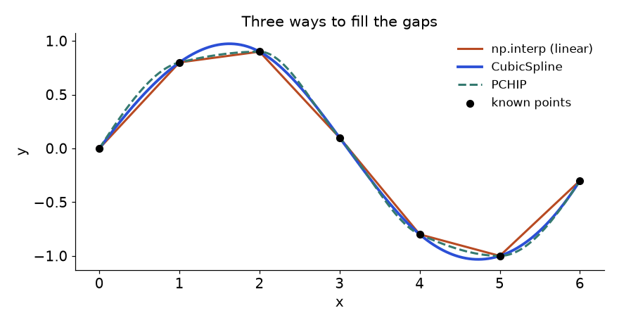
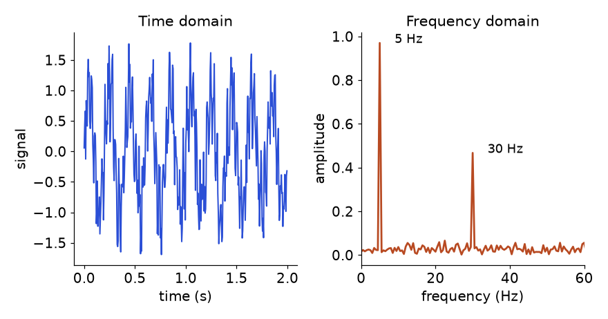
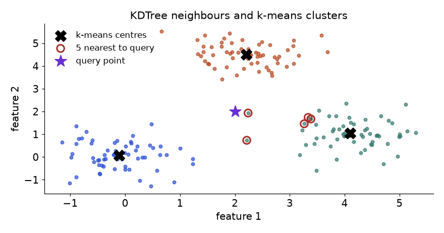
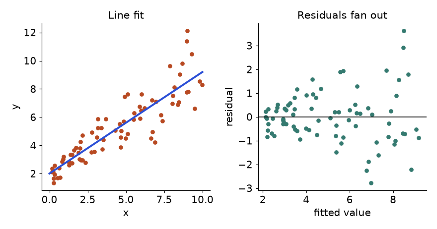

It is Monday morning and Maya, an analyst at a food-delivery company, has four questions on her desk. The delivery-time column is skewed, so which distribution describes it, and what is the chance that an order takes more than two hours? The new route-planning app was tried on half the drivers: is it really faster, or is that luck? The support-call volume after a bad-weather day decays over time: how fast, with what error bars? And finally, 40 driver-hours must be shared between two zones to earn the most profit. None of this is machine learning. It is the older, steadier craft of scientific computing, and almost every data domain (finance, health, engineering, marketing, operations) leans on the same few libraries to do it.
This chapter teaches those libraries point by point: SciPy (the scientific toolbox on top of NumPy) and statsmodels (statistical models with full inference tables), plus a quick matplotlib reference for showing results. By the end you will be able to fit and test distributions, run and interpret hypothesis tests, build confidence intervals by formula and by bootstrap, fit curves with uncertainty, solve small optimisation problems, integrate and interpolate, work with sparse matrices, find a frequency in a noisy signal, search neighbours quickly, and cluster points. Five recipes tie it together: fit a distribution, A/B test, curve fitting with uncertainty, a small optimisation, and resampling.
NumPy gives you the array. SciPy is a collection of well-tested numerical routines that work on NumPy arrays: probability distributions and tests, optimisers, integrators, interpolators, linear algebra, sparse matrices, signal processing, Fourier transforms, spatial searches and clustering. Most of it wraps battle-tested C, C++ and Fortran code (LAPACK, ODEPACK, QHull and others), so you get decades of numerical care with a Python call. statsmodels is a separate package focused on statistical modelling: regression (OLS, GLM, logistic), time series (ARIMA, SARIMAX), and above all inference output: standard errors, p-values, confidence intervals and diagnostic tests in one summary table.
| Use it when | Do NOT use it when |
|---|---|
| You need a distribution, a classical test, or a confidence interval | You want a predictive model with cross-validation and pipelines: use scikit-learn |
You need to fit a custom formula to measured points (curve_fit) | Your data has millions of rows and you need group-by logic: use pandas first, then call SciPy on the arrays |
| You need a small constrained optimisation (a few hundred variables) | You are training a neural network: use a deep-learning framework with automatic differentiation |
| You need a regression with standard errors and p-values (statsmodels) | You only need predictions from a regression: numpy.linalg.lstsq or scikit-learn is lighter |
| You need fast nearest-neighbour search on low-dimensional points | You have 768-dimensional embeddings at scale: use an approximate nearest-neighbour index |
Install with python3 -m pip install scipy statsmodels (inside a virtual environment, see the Python document, Chapter 10). SciPy submodules are not imported automatically by import scipy, so import the pieces you need. The conventions below are what you will see in almost all code.
import numpy as np
import scipy
import pandas as pd
import matplotlib
from scipy import stats, optimize, integrate, interpolate, linalg, signal, spatial, fft
from scipy import sparse
from scipy.cluster import vq, hierarchy
print("numpy ", np.__version__.split(".")[0] + ".x")
print("scipy ", scipy.__version__)
print("pandas", pd.__version__.split(".")[0] + ".x")
print("matplotlib", matplotlib.__version__)
print(stats.norm.cdf(0))numpy 2.x
scipy 1.18.1
pandas 3.x
matplotlib 3.11.2
0.5from scipy import ... lines pull in the submodules. import scipy alone would not make scipy.stats usable in older versions, so always import the submodule you use.np.__version__.stats.norm.cdf(0) is a first smoke test: half the standard normal lies below zero, so it prints 0.5.np for NumPy, pd for pandas, plt for matplotlib.pyplot, sm for statsmodels.api, smf for statsmodels.formula.api, and import SciPy as from scipy import stats, optimize. A statsmodels block (not run here) always starts import statsmodels.api as sm.Picture a stack. NumPy arrays are the floor: every SciPy function takes arrays in and returns arrays or small result objects out. Each SciPy submodule is a self-contained tool drawer. statsmodels, scikit-learn, pandas and matplotlib stand on the same floor, so data moves between them without copying or converting. Learning this chapter is mostly learning which drawer holds which tool and what shape of object each tool returns.

How to read it: start at the bottom. Whatever the top layer is (a pandas column, a scikit-learn feature matrix), you can hand its values to a SciPy routine because they are NumPy arrays underneath. Results come back the same way, which is why a pipeline can mix all of these libraries in ten lines.
Three habits make SciPy easy. First, result objects: modern SciPy functions return named results (res.statistic, res.pvalue, res.x, res.success) rather than anonymous tuples; read the attribute names. Second, random state: always pass a seeded generator, rng = np.random.default_rng(0), and give it to random_state=rng or rvs(..., random_state=rng). Third, vectorise: pass whole arrays, never loop over scalars.
A probability distribution is a recipe that says how likely each value is. SciPy gives you about a hundred ready-made ones. Every continuous distribution is an object with the same methods, so once you learn norm you know lognorm, gamma, expon and the rest. A discrete distribution (binom, poisson) uses pmf (probability of exactly this value) instead of pdf (density).
| Name | What it does in plain English | Minimal example |
|---|---|---|
norm | Bell curve with mean loc and spread scale | stats.norm(loc=0, scale=1) |
expon | Waiting time between random events | stats.expon(scale=5) |
lognorm | Positive, right-skewed values (durations, prices) | stats.lognorm(s=0.5, scale=3) |
gamma | Positive skewed, sums of waiting times | stats.gamma(a=2, scale=1.5) |
beta | Values between 0 and 1 (rates, proportions) | stats.beta(2, 5) |
uniform | All values in an interval equally likely | stats.uniform(loc=2, scale=3) |
t, chi2 | Reference curves used inside tests | stats.t(df=9) |
binom | Number of successes in n yes/no trials | stats.binom(n=10, p=0.3) |
poisson | Count of events in a fixed window | stats.poisson(mu=4) |
.pdf(x) / .pmf(k) | Density (or exact probability) at a point | stats.norm.pdf(0) |
.cdf(x) | Probability of being at or below x | stats.norm.cdf(1.96) |
.sf(x) | Survival function, 1 minus cdf, accurate in the tail | stats.norm.sf(5) |
.ppf(q) | Inverse cdf: the value below which q of the mass lies | stats.norm.ppf(0.975) |
.rvs(size, random_state) | Draw random samples | d.rvs(100, random_state=rng) |
.interval(conf) | Central interval holding a fraction of the mass | stats.norm.interval(0.95) |
.mean() .std() .var() | Moments of a frozen distribution | stats.expon(scale=5).mean() |
.logpdf(x) | Log density, stable for likelihoods | stats.norm.logpdf(x).sum() |
.fit(data) | Maximum-likelihood parameters from data | stats.lognorm.fit(x, floc=0) |
| "Freezing" | Fix the parameters once, reuse the object | d = stats.gamma(2, scale=3) |
stats.describe(x) | Count, min/max, mean, variance, skewness, kurtosis | stats.describe(x).skewness |
stats.skew / kurtosis | Asymmetry and tail weight of a sample | stats.skew(x) |
stats.zscore(x) | Standardise: (x minus mean) / std | stats.zscore(x) |
stats.kstest(x, cdf) | Does the sample match a given distribution? | stats.kstest(x, "norm", args=(m, s)) |
stats.probplot(x) | Data for a Q-Q plot (normality check) | stats.probplot(x, dist="norm") |
stats.scoreatpercentile / percentileofscore | Percentile of a value or value of a percentile | stats.percentileofscore(x, 3) |
stats.trim_mean(x, 0.1) | Mean after cutting 10% off each end | stats.trim_mean(x, 0.1) |
stats.iqr(x) | Interquartile range, a robust spread | stats.iqr(x) |
stats.mode(x) | Most frequent value | stats.mode([1, 2, 2]).mode |
stats.sem(x) | Standard error of the mean | stats.sem(x) |
stats.qmc.Sobol | Low-discrepancy points for simulation | stats.qmc.Sobol(2, seed=0) |
Problem 18.2.1 Test scores follow a normal distribution with mean 70 and standard deviation 10. Find the density at 70, the share scoring below 85, the share above 90, the score that 90% of people stay under, and 5 random scores.
import numpy as np
from scipy import stats
scores = stats.norm(loc=70, scale=10)
print("pdf at 70 :", round(scores.pdf(70), 4))
print("P(score <= 85) :", round(scores.cdf(85), 4))
print("P(score > 90) :", round(scores.sf(90), 4))
print("90th percentile:", round(scores.ppf(0.90), 2))
rng = np.random.default_rng(0)
print("5 draws :", scores.rvs(5, random_state=rng).round(1))pdf at 70 : 0.0399
P(score <= 85) : 0.9332
P(score > 90) : 0.0228
90th percentile: 82.82
5 draws : [71.3 68.7 76.4 71. 64.6]stats.norm(loc=70, scale=10) freezes the parameters into an object called scores. Every later call reuses them.pdf(70) is the height of the curve at its peak: 1 / (10 times the square root of 2π), about 0.0399. A density is not a probability, which is why it can exceed 1 for narrow curves.cdf(85) is the area to the left of 85, the chance of scoring 85 or less. That is 1.5 standard deviations above the mean, so about 0.93.sf(90) is "survival", the area to the right of 90, which is two standard deviations up: roughly 2.3%.ppf(0.90) goes the other way (percent point function): from a probability to a value. About 1.28 standard deviations above the mean gives 82.8.rvs(5, random_state=rng) draws five scores. The seeded generator makes the draws repeatable.cdf turns a value into a probability, ppf turns a probability into a value. They are inverses: ppf(cdf(x)) returns x. A confidence interval is just two ppf calls.Problem 18.2.2 A call centre gets on average 4 complaints per hour (Poisson). What is the chance of exactly 7 in an hour, of 10 or more, and what is the smallest staffing level that covers 99% of hours?
from scipy import stats
calls = stats.poisson(mu=4)
print("P(exactly 7) :", round(calls.pmf(7), 4))
print("P(10 or more) :", round(calls.sf(9), 5))
print("99% covered by:", int(calls.ppf(0.99)), "calls")
print("mean, std :", calls.mean(), round(calls.std(), 3))P(exactly 7) : 0.0595
P(10 or more) : 0.00813
99% covered by: 9 calls
mean, std : 4.0 2.0mu, its mean count.pmf(7) is the probability of exactly 7, a real probability because the variable is discrete.sf(9). A common slip is sf(10), which would drop the case of exactly 10 (see the pitfalls section).ppf(0.99) returns the smallest integer k with cdf(k) at least 0.99.Problem 18.2.3 Maya has 800 delivery times (hours). Fit a lognormal and a normal, compare them, and compute the chance an order takes more than 6 hours.
import numpy as np
from scipy import stats
rng = np.random.default_rng(7)
data = rng.lognormal(mean=1.2, sigma=0.5, size=800)
s, loc, scale = stats.lognorm.fit(data, floc=0)
mu, sd = stats.norm.fit(data)
print("lognorm shape s=%.3f scale=%.3f" % (s, scale))
print("normal mu=%.3f sd=%.3f" % (mu, sd))
ll_log = stats.lognorm.logpdf(data, s, loc, scale).sum()
ll_nor = stats.norm.logpdf(data, mu, sd).sum()
print("log-likelihood lognorm: %.1f normal: %.1f" % (ll_log, ll_nor))
print("AIC lognorm: %.1f normal: %.1f" % (2 * 2 - 2 * ll_log, 2 * 2 - 2 * ll_nor))
print("KS p-value lognorm: %.3f" % stats.kstest(data, "lognorm", args=(s, loc, scale)).pvalue)
print("P(time > 6h):", round(stats.lognorm.sf(6, s, loc, scale), 4), "empirical:", (data > 6).mean())lognorm shape s=0.472 scale=3.149
normal mu=3.519 sd=1.744
log-likelihood lognorm: -1452.4 normal: -1580.0
AIC lognorm: 2908.9 normal: 3163.9
KS p-value lognorm: 0.589
P(time > 6h): 0.086 empirical: 0.08875lognorm.fit(data, floc=0) estimates shape, location and scale. Fixing floc=0 says "values start at zero", which is physically right for durations and makes the fit stable and faster.norm.fit returns the sample mean and standard deviation.logpdf over all points; larger is better. The AIC (2 times parameters minus 2 times log-likelihood, lower is better) penalises extra parameters. Both models have two free parameters here, so the comparison is fair.kstest compares the sample with the fitted cdf. Caution: because the parameters were estimated from the same data, the p-value is optimistic; treat it as a rough check, not proof.sf(6, ...) gives the tail probability, and we compare it with the plain empirical share as a sanity check.
How to read it: the bars are the data. The solid curve follows the sharp rise and long right tail. The dashed normal curve is symmetric, so it puts probability on negative hours and underestimates the peak. A good fit means the curve rides the tops of the bars everywhere, not just near the middle.
pdf as a probability. stats.norm(0, 0.1).pdf(0) is about 3.99, which is fine: density can exceed 1. Probabilities come from areas: use cdf(b) - cdf(a).A hypothesis test asks "could this difference be just luck?". It starts from a boring assumption (the null hypothesis, for example "both groups have the same mean"), computes a test statistic, and reports a p-value: the probability of seeing a result at least this extreme if the boring assumption were true. A small p-value (below a threshold you chose in advance, often 0.05) is evidence against the null. It is not the probability that the null is true, and it says nothing about how large or important the effect is.
| Name | What it does in plain English | Minimal example |
|---|---|---|
ttest_1samp | Is the mean different from a fixed number? | stats.ttest_1samp(x, 50) |
ttest_ind | Do two independent groups have the same mean? (equal_var=False is Welch) | stats.ttest_ind(a, b, equal_var=False) |
ttest_rel | Paired before/after comparison | stats.ttest_rel(before, after) |
mannwhitneyu | Rank-based two-group test, no normality needed | stats.mannwhitneyu(a, b) |
wilcoxon | Rank-based paired test | stats.wilcoxon(before - after) |
shapiro | Is the sample plausibly normal? | stats.shapiro(x) |
normaltest | Normality test from skew and kurtosis | stats.normaltest(x) |
levene | Do groups have equal variance? | stats.levene(a, b) |
f_oneway | One-way ANOVA across 3+ groups | stats.f_oneway(a, b, c) |
kruskal | Rank-based ANOVA | stats.kruskal(a, b, c) |
chi2_contingency | Are two categorical variables related? | stats.chi2_contingency(table) |
chisquare | Do counts match expected counts? | stats.chisquare(obs, exp) |
fisher_exact | Exact test for a 2x2 table with small counts | stats.fisher_exact([[3, 1], [1, 3]]) |
binomtest | Is an observed rate different from a target? | stats.binomtest(k, n, 0.5) |
ks_2samp | Do two samples share a distribution? | stats.ks_2samp(a, b) |
pearsonr | Linear correlation, with p-value | stats.pearsonr(x, y) |
spearmanr | Rank correlation, handles monotone curves and outliers | stats.spearmanr(x, y) |
kendalltau | Rank correlation for small samples and ties | stats.kendalltau(x, y) |
linregress | Straight-line fit with slope p-value | stats.linregress(x, y) |
bootstrap | Confidence interval by resampling | stats.bootstrap((x,), np.mean) |
permutation_test | Test by shuffling labels | stats.permutation_test((a, b), stat) |
t.interval | Confidence interval for a mean | stats.t.interval(0.95, n-1, m, se) |
stats.sem | Standard error of the mean | stats.sem(x) |
false_discovery_control | Adjust many p-values (Benjamini-Hochberg) | stats.false_discovery_control(p) |
power_divergence | Family behind chi-square and G-test | stats.power_divergence(o, e, lambda_=0) |
.statistic and .pvalue, and many add .confidence_interval(). Choose by the data shape: two numeric groups (t-test or Mann-Whitney), paired numeric (paired t or Wilcoxon), two categories (chi-square or Fisher), many groups (ANOVA or Kruskal), two numeric columns (Pearson or Spearman).Problem 18.3.1 Control drivers average about 38 minutes per delivery; drivers using the new route app are simulated at about 35. With 120 drivers in each group, is the app faster? Report the difference with a 95% interval.
import numpy as np
from scipy import stats
rng = np.random.default_rng(42)
control = rng.normal(38, 8, 120)
variant = rng.normal(35, 9, 120)
res = stats.ttest_ind(variant, control, equal_var=False)
print("t = %.3f p = %.4f" % (res.statistic, res.pvalue))
diff = variant.mean() - control.mean()
ci = res.confidence_interval(0.95)
print("mean diff = %.2f min, 95%% CI (%.2f, %.2f)" % (diff, ci.low, ci.high))
pooled = np.sqrt((variant.var(ddof=1) + control.var(ddof=1)) / 2)
print("Cohen d = %.2f" % (diff / pooled))t = -2.802 p = 0.0055
mean diff = -2.82 min, 95% CI (-4.80, -0.84)
Cohen d = -0.36ttest_ind(variant, control, equal_var=False) is Welch's t-test, the safe default because it does not assume equal variances. The first argument minus the second is the tested difference.res.confidence_interval(0.95) gives the range of plausible true differences. Report this, not just p: it shows size and uncertainty.Problem 18.3.2 Customer wait times are skewed. Check normality with Shapiro-Wilk, then compare two groups with Mann-Whitney U.
import numpy as np
from scipy import stats
rng = np.random.default_rng(1)
a = rng.lognormal(1.0, 0.6, 80)
b = rng.lognormal(1.3, 0.6, 80)
print("shapiro a: p = %.5f" % stats.shapiro(a).pvalue)
print("shapiro log(a): p = %.3f" % stats.shapiro(np.log(a)).pvalue)
mw = stats.mannwhitneyu(a, b, alternative="two-sided")
print("Mann-Whitney U = %.0f p = %.5f" % (mw.statistic, mw.pvalue))
auc = mw.statistic / (len(a) * len(b))
print("P(random a beats random b) = %.3f" % auc)shapiro a: p = 0.00000
shapiro log(a): p = 0.532
Mann-Whitney U = 2292 p = 0.00196
P(random a beats random b) = 0.358a; the log of a lognormal is normal, so the second p-value is large (we cannot reject).mannwhitneyu compares ranks, so skew and outliers matter far less. alternative="two-sided" is explicit.a beats a random value from b, a readable effect size (0.5 means no difference).Problem 18.3.3 Of 1000 visitors, 500 saw page A and 500 saw page B. A converted 60, B converted 85. Is the conversion rate different?
import numpy as np
from scipy import stats
table = np.array([[60, 440],
[85, 415]])
chi2, p, dof, expected = stats.chi2_contingency(table, correction=False)
print("chi2 = %.3f dof = %d p = %.4f" % (chi2, dof, p))
print("expected counts:\n", expected)
print("fisher exact p = %.4f" % stats.fisher_exact(table).pvalue)
print("rates:", table[:, 0] / table.sum(axis=1))chi2 = 5.041 dof = 1 p = 0.0247
expected counts:
[[ 72.5 427.5]
[ 72.5 427.5]]
fisher exact p = 0.0309
rates: [0.12 0.17]chi2_contingency computes the counts we would expect if page and conversion were unrelated (row total times column total divided by grand total), then measures the gap. correction=False switches off Yates' continuity correction so the number matches the textbook formula.expected table must have all cells of at least about 5 for the chi-square approximation to be trusted; here the smallest is 72.5.Problem 18.3.4 A small sample of 60 skewed delivery times. Get a 95% interval for the mean by formula, and for the median by bootstrap (no formula exists for it).
import numpy as np
from scipy import stats
rng = np.random.default_rng(3)
data = rng.lognormal(1.2, 0.5, 60)
m, se = data.mean(), stats.sem(data)
lo, hi = stats.t.interval(0.95, df=len(data) - 1, loc=m, scale=se)
print("mean %.3f, t interval (%.3f, %.3f)" % (m, lo, hi))
res = stats.bootstrap((data,), np.median, n_resamples=5000,
confidence_level=0.95, method="percentile", random_state=1)
ci = res.confidence_interval
print("median %.3f, bootstrap interval (%.3f, %.3f)" % (np.median(data), ci.low, ci.high))
print("bootstrap std error: %.3f" % res.standard_error)mean 3.819, t interval (3.183, 4.455)
median 3.132, bootstrap interval (2.939, 3.851)
bootstrap std error: 0.281stats.t.interval does that in one call, using df = n - 1.stats.bootstrap takes the data as a tuple of samples (note (data,)), a statistic function, and the number of resamples. It resamples with replacement, recomputes the median each time, and reads the interval from percentiles of those medians.method="percentile" is the simplest; the default "BCa" corrects bias and skew and is usually preferred for real work.random_state=1 makes it repeatable, and res.standard_error is the spread of the resampled medians.
How to read it: each bar counts how often a resample gave that median. The dashed lines cut off the outer 2.5% on each side. A narrow pile means the median is well pinned down; a wide one means more data is needed.
Problem 18.3.5 Compare Pearson and Spearman on a straight relationship with one wild reading, then correct 6 p-values for multiple testing.
import numpy as np
from scipy import stats
rng = np.random.default_rng(5)
x = np.linspace(1, 10, 40)
y = x + rng.normal(0, 0.5, 40)
y[0] = 30 # one broken sensor reading
print("pearson r = %.3f" % stats.pearsonr(x, y).statistic)
print("spearman r = %.3f" % stats.spearmanr(x, y).statistic)
p = np.array([0.001, 0.008, 0.039, 0.041, 0.20, 0.74])
adj = stats.false_discovery_control(p)
print("adjusted:", adj.round(3))
print("significant at 5%:", adj < 0.05)pearson r = 0.290
spearman r = 0.843
adjusted: [0.006 0.024 0.062 0.062 0.24 0.74 ]
significant at 5%: [ True True False False False False]false_discovery_control applies the Benjamini-Hochberg procedure. Testing 6 hypotheses at 5% each would give a high chance of at least one false alarm, so the adjusted values are larger; only those under 0.05 count.false_discovery_control.Optimisation means "find the inputs that make some number as small as possible". Training a model, fitting a curve, planning a route and pricing a product are all optimisation. scipy.optimize offers one function per family of problems. Pick by asking: is it a smooth function of a few variables (minimize), a model to fit to points (curve_fit), an equation to solve (root, brentq), or a straight-line objective with straight-line limits (linprog)?
| Name | What it does in plain English | Minimal example |
|---|---|---|
minimize | General minimiser; choose a method | optimize.minimize(f, x0) |
minimize(method="BFGS") | Smooth, unconstrained, uses gradients | minimize(f, x0, method="BFGS") |
minimize(method="L-BFGS-B") | Smooth with simple bounds, many variables | minimize(f, x0, bounds=[(0, 5)] * 3) |
minimize(method="SLSQP") | Smooth with equality or inequality constraints | minimize(f, x0, constraints=[c]) |
minimize(method="Nelder-Mead") | No gradients, noisy or non-smooth | minimize(f, x0, method="Nelder-Mead") |
minimize_scalar | One variable, bracket or bounds | optimize.minimize_scalar(g, bounds=(0, 4), method="bounded") |
curve_fit | Least-squares fit of a Python function to points | optimize.curve_fit(f, x, y, p0=[1, 1]) |
least_squares | Robust or bounded nonlinear least squares | optimize.least_squares(resid, x0, loss="soft_l1") |
root | Solve a system f(x) = 0 | optimize.root(F, [1, 1]) |
root_scalar | Solve one equation in one variable | optimize.root_scalar(g, bracket=[0, 3]) |
brentq | Fast bracketed root, needs a sign change | optimize.brentq(g, 0, 3) |
fsolve | Older system solver, still common | optimize.fsolve(F, [1, 1]) |
linprog | Linear objective with linear limits (HiGHS solver) | optimize.linprog(c, A_ub=A, b_ub=b) |
milp | Linear problem where some variables are integers | optimize.milp(c, integrality=1, ...) |
linear_sum_assignment | Best one-to-one matching from a cost matrix | optimize.linear_sum_assignment(cost) |
nnls | Least squares with non-negative coefficients | optimize.nnls(A, b) |
lsq_linear | Linear least squares with bounds | optimize.lsq_linear(A, b, bounds=(0, 1)) |
differential_evolution | Global search for rugged functions, with bounds | optimize.differential_evolution(f, bounds) |
basinhopping | Global search by random restarts | optimize.basinhopping(f, x0) |
dual_annealing | Global search by simulated annealing | optimize.dual_annealing(f, bounds) |
Bounds, LinearConstraint | Objects that describe limits cleanly | optimize.Bounds(0, 1) |
NonlinearConstraint | Constraint given by a function | NonlinearConstraint(g, 0, np.inf) |
approx_fprime | Numerical gradient check | optimize.approx_fprime(x, f, 1e-8) |
check_grad | Compare your gradient with a numerical one | optimize.check_grad(f, grad, x0) |
rosen, rosen_der | A classic test function and its gradient | optimize.rosen([1, 1]) |
Problem 18.4.1 Minimise f(x, y) = (1 - x)2 + 5(y - x2)2, a curved valley whose bottom is at (1, 1). Start from (-1.2, 1).
import numpy as np
from scipy import optimize
def f(v):
x, y = v
return (1 - x) ** 2 + 5 * (y - x ** 2) ** 2
res = optimize.minimize(f, x0=[-1.2, 1.0], method="BFGS")
print("success:", res.success)
print("x :", res.x.round(4))
print("f(x) :", float(res.fun) < 1e-8)
print("iterations:", res.nit, " function calls:", res.nfev)
print(res.message)success: True
x : [1. 1.]
f(x) : True
iterations: 15 function calls: 57
Optimization terminated successfully.f takes one array v, not two separate numbers. This is the contract for minimize.x0 is the starting guess. Optimisers walk downhill from there, so a bad start can end in a poor place for non-convex functions.method="BFGS" estimates the slope numerically and builds a curved model of the valley as it goes.res.success and res.message; a run can stop early and still return numbers.res.fun is nearly zero, because the exact tiny value is noise; res.nit and res.nfev show the work done.
How to read it: the closed curves are levels of equal f: tight lines mean steep ground. The orange path starts on the left, drops into the banana-shaped valley and follows it to the star. Short steps in the valley show the optimiser feeling for the curve.
Problem 18.4.2 Minimise x2 + y2 subject to x + y at least 1, and both between 0 and 2. By symmetry the answer is (0.5, 0.5).
import numpy as np
from scipy import optimize
obj = lambda v: v[0] ** 2 + v[1] ** 2
cons = optimize.LinearConstraint([[1, 1]], lb=1, ub=np.inf)
bnds = optimize.Bounds([0, 0], [2, 2])
res = optimize.minimize(obj, x0=[2.0, 0.0], method="SLSQP", bounds=bnds, constraints=[cons])
print(res.x.round(4), round(res.fun, 4), res.success)[0.5 0.5] 0.5 TrueLinearConstraint([[1, 1]], lb=1, ub=np.inf) reads: 1 times x plus 1 times y must lie between 1 and infinity.Bounds sets a box for each variable separately.Problem 18.4.3 Support calls after a storm decay as a e-kt + c. Fit a, k, c to 30 noisy measurements and report 95% intervals.
import numpy as np
from scipy import optimize, stats
def model(t, a, k, c):
return a * np.exp(-k * t) + c
rng = np.random.default_rng(5)
t = np.linspace(0, 10, 30)
y = model(t, 4.0, 0.5, 1.0) + rng.normal(0, 0.15, t.size)
popt, pcov = optimize.curve_fit(model, t, y, p0=[1, 1, 0])
perr = np.sqrt(np.diag(pcov))
dof = t.size - len(popt)
tcrit = stats.t.ppf(0.975, dof)
for name, v, e in zip("a k c".split(), popt, perr):
print("%s = %.3f +/- %.3f 95%% CI (%.3f, %.3f)" % (name, v, e, v - tcrit * e, v + tcrit * e))
resid = y - model(t, *popt)
print("residual std: %.3f (true noise 0.15)" % resid.std(ddof=len(popt)))a = 3.954 +/- 0.091 95% CI (3.767, 4.141)
k = 0.457 +/- 0.025 95% CI (0.405, 0.508)
c = 0.908 +/- 0.049 95% CI (0.806, 1.009)
residual std: 0.130 (true noise 0.15)model(t, a, k, c) must take the x data first, then the parameters as separate arguments.curve_fit(model, t, y, p0=...) returns popt (best parameters) and pcov (their covariance matrix). Nonlinear fits need a sensible starting guess p0; the default of all ones can fail.pcov are the standard errors.
How to read it: the orange dots are measurements, the blue line the best curve and the shaded band the range the curve could plausibly take. The band is narrow where data is dense and reliable. Points outside the band are fine: the band describes the curve, not individual measurements.
Problem 18.4.4 Solve x ex = 5 for x. Then find the point where a circle x2 + y2 = 4 meets the line y = x.
import numpy as np
from scipy import optimize
g = lambda x: x * np.exp(x) - 5
x1 = optimize.brentq(g, 0, 3)
print("brentq x =", round(x1, 6), " check:", round(x1 * np.exp(x1), 6))
F = lambda v: [v[0] ** 2 + v[1] ** 2 - 4, v[1] - v[0]]
sol = optimize.root(F, [1.0, 1.0])
print("root:", sol.x.round(6), sol.success, " sqrt(2) =", round(np.sqrt(2), 6))brentq x = 1.326725 check: 5.0
root: [1.414214 1.414214] True sqrt(2) = 1.414214brentq(g, 0, 3) needs a bracket where g changes sign (g(0) is negative, g(3) positive). It is fast and cannot fail inside a valid bracket.root with a starting guess.Problem 18.4.5 You have 40 driver-hours for zones A and B. A earns 12 per hour, B earns 9. Fuel limits: 3 units per hour in A and 1 per hour in B, with 90 units in total. Zone A can absorb at most 25 hours. Maximise profit.
| Variables | a = hours in A, b = hours in B |
|---|---|
| Objective | maximise 12a + 9b, so minimise -12a - 9b (linprog only minimises) |
| Limits | a + b <= 40; 3a + b <= 90; 0 <= a <= 25; b >= 0 |
from scipy import optimize
c = [-12, -9]
A_ub = [[1, 1],
[3, 1]]
b_ub = [40, 90]
res = optimize.linprog(c, A_ub=A_ub, b_ub=b_ub, bounds=[(0, 25), (0, None)], method="highs")
print(res.status, res.message)
print("hours A, B:", res.x.round(2))
print("profit:", round(-res.fun, 2))
print("slack (unused) per limit:", res.slack.round(2))0 Optimization terminated successfully. (HiGHS Status 7: Optimal)
hours A, B: [25. 15.]
profit: 435.0
slack (unused) per limit: [0. 0.]c holds the cost per unit of each variable. Negating turns maximise into minimise.A_ub and b_ub encode every "at most" row: each row of A_ub times the variables must be at most the matching entry of b_ub.bounds gives each variable a (low, high) pair; None means no limit.res.slack shows unused capacity: a slack of 0 means that limit is binding (fuel and hours are both used up).linprog minimises, then reporting a negative "profit" or the wrong plan. Negate the objective going in, and negate res.fun coming out.Integration adds up a quantity that changes continuously: area under a curve, total distance from a speed, probability from a density. Interpolation estimates values between known points. Both turn scattered or sampled numbers into continuous functions you can query anywhere.
| Name | What it does in plain English | Minimal example |
|---|---|---|
integrate.quad | Area under a function between two limits, with an error estimate | integrate.quad(np.sin, 0, np.pi) |
integrate.dblquad | Double integral over a region | integrate.dblquad(lambda y, x: x*y, 0, 1, 0, 1) |
integrate.nquad | Integral in many dimensions | integrate.nquad(f, [[0, 1]] * 3) |
integrate.quad_vec | Integrate a vector-valued function | integrate.quad_vec(lambda x: [x, x**2], 0, 1) |
integrate.trapezoid | Area from sampled points (straight segments) | integrate.trapezoid(y, x) |
integrate.simpson | Area from sampled points (parabolic pieces) | integrate.simpson(y, x=x) |
integrate.cumulative_trapezoid | Running area, e.g. distance from speed | integrate.cumulative_trapezoid(v, t, initial=0) |
integrate.solve_ivp | Solve a differential equation from a start value | integrate.solve_ivp(rhs, (0, 5), [1.0]) |
integrate.odeint | Older ODE solver, still common | integrate.odeint(rhs, y0, t) |
interpolate.interp1d | Legacy 1-D interpolator (no new features) | interpolate.interp1d(x, y, kind="cubic") |
np.interp | Fast linear interpolation on sorted x | np.interp(2.5, x, y) |
interpolate.CubicSpline | Smooth curve through every point | interpolate.CubicSpline(x, y) |
interpolate.PchipInterpolator | Smooth but never overshoots the data | interpolate.PchipInterpolator(x, y) |
interpolate.Akima1DInterpolator | Smooth, little wiggle near outliers | interpolate.Akima1DInterpolator(x, y) |
interpolate.make_interp_spline | B-spline of chosen degree through points | interpolate.make_interp_spline(x, y, k=3) |
interpolate.make_smoothing_spline | Smooth curve that does not chase noise | make_smoothing_spline(x, y, lam=1) |
interpolate.UnivariateSpline | Smoothing spline with a smoothing factor s | UnivariateSpline(x, y, s=1) |
interpolate.RegularGridInterpolator | Look up values on a regular grid | RegularGridInterpolator((xs, ys), Z) |
interpolate.griddata | Interpolate scattered 2-D points to a grid | interpolate.griddata(pts, vals, (gx, gy)) |
interpolate.RBFInterpolator | Smooth interpolation of scattered data in any dimension | RBFInterpolator(pts, vals) |
spline.derivative(), .antiderivative(), .integrate(a, b) | Calculus on a fitted spline | cs.integrate(0, 6) |
spline.roots() | Where the fitted curve crosses zero | cs.roots() |
Problem 18.5.1 Compute the area under the standard normal density from -1.96 to 1.96 with quad, and check it against the cdf. Then compute the average of a function over a range.
import numpy as np
from scipy import integrate, stats
area, err = integrate.quad(stats.norm.pdf, -1.96, 1.96)
print("quad area = %.6f (error estimate %.1e)" % (area, err))
print("cdf diff = %.6f" % (stats.norm.cdf(1.96) - stats.norm.cdf(-1.96)))
val, _ = integrate.quad(lambda x: x ** 2, 0, 3)
print("integral of x^2 on [0,3]:", round(val, 6), " mean value:", round(val / 3, 6))
tail, _ = integrate.quad(lambda x: np.exp(-x), 0, np.inf)
print("integral of exp(-x) to infinity:", round(tail, 6))quad area = 0.950004 (error estimate 1.0e-11)
cdf diff = 0.950004
integral of x^2 on [0,3]: 9.0 mean value: 3.0
integral of exp(-x) to infinity: 1.0quad(f, a, b) returns two numbers: the value and an estimate of the absolute error. Unpack both and look at the error.np.inf); the integral of e-x from 0 to infinity is exactly 1.Problem 18.5.2 A delivery van logs its speed (km/h) every 6 minutes for an hour. How far did it travel? Use the trapezoid and Simpson rules, and the running total.
import numpy as np
from scipy import integrate
t = np.linspace(0, 1, 11) # hours
speed = np.array([0, 20, 35, 42, 45, 40, 38, 30, 22, 10, 0.0])
print("trapezoid:", round(integrate.trapezoid(speed, t), 3), "km")
print("simpson :", round(integrate.simpson(speed, x=t), 3), "km")
dist = integrate.cumulative_trapezoid(speed, t, initial=0)
print("distance at each stop:", dist.round(1))trapezoid: 28.2 km
simpson : 28.267 km
distance at each stop: [ 0. 1. 3.8 7.6 12. 16.2 20.1 23.5 26.1 27.7 28.2]trapezoid are (y, x): the values first, the positions second. Swapping them is a classic bug.x as a keyword.cumulative_trapezoid returns the distance travelled so far at each reading; initial=0 keeps the array the same length as the input.Problem 18.5.3 App users grow logistically: dN/dt = r N (1 - N/K) with r = 0.8 per week and capacity K = 1000. Starting from 50 users, find N after 10 weeks and when it first passes 500.
import numpy as np
from scipy import integrate
r, K = 0.8, 1000.0
rhs = lambda t, N: r * N * (1 - N / K)
sol = integrate.solve_ivp(rhs, (0, 10), [50.0], t_eval=np.linspace(0, 10, 101), rtol=1e-8)
print("N(10) = %.1f" % sol.y[0, -1])
exact = K / (1 + (K / 50 - 1) * np.exp(-r * 10))
print("exact = %.1f" % exact)
cross = sol.t[np.argmax(sol.y[0] > 500)]
print("passes 500 users at about week", cross)N(10) = 993.7
exact = 993.7
passes 500 users at about week 3.7solve_ivp wants rhs(t, y) with time first, then the state. The state is an array even for one variable, hence [50.0].(0, 10) is the time span; t_eval asks for output at 101 evenly spaced times; rtol tightens accuracy.sol.y has one row per variable and one column per time, so sol.y[0, -1] is the last value.np.argmax(condition) returns the first index where the condition is True: the first grid time with more than 500 users.Problem 18.5.4 Seven sensor readings are known. Estimate the value at x = 2.5 with three methods, then use a spline to get the slope there and the total area.
import numpy as np
from scipy import interpolate
xk = np.array([0, 1, 2, 3, 4, 5, 6.0])
yk = np.array([0, 0.8, 0.9, 0.1, -0.8, -1.0, -0.3])
print("linear:", round(float(np.interp(2.5, xk, yk)), 4))
cs = interpolate.CubicSpline(xk, yk)
pc = interpolate.PchipInterpolator(xk, yk)
print("cubic :", round(float(cs(2.5)), 4))
print("pchip :", round(float(pc(2.5)), 4))
print("slope at 2.5:", round(float(cs.derivative()(2.5)), 4))
print("area 0..6 :", round(float(cs.integrate(0, 6)), 4))
print("zero crossings:", cs.roots(extrapolate=False).round(3))linear: 0.5
cubic : 0.5768
pchip : 0.6059
slope at 2.5: -0.8452
area 0..6 : -0.1643
zero crossings: [0. 3.098]xk and yk are the known points. Interpolators need x sorted in increasing order.np.interp joins neighbours with straight lines: at 2.5 that is the midpoint of 0.9 and 0.1, which is 0.5.extrapolate=False keeps roots to the known range; the first root, 0, is simply the first data point (its value is 0).
How to read it: every curve passes through all black points, so they only disagree between points. The orange linear path has corners. The blue spline is smoothest but may overshoot slightly near sharp turns; the dashed PCHIP stays within the neighbouring values. Choose PCHIP for data that must not overshoot (prices, counts).
extrapolate=False or a real model.Linear algebra solves systems like A x = b, finds the best-fitting line (least squares) and splits a matrix into simpler parts (SVD, eigenvalues). Sparse matrices store only the non-zero entries, so a matrix of 10 million cells that is 99.99% zero takes a few kilobytes. numpy.linalg covers the basics; scipy.linalg is a superset with more decompositions and options, and always uses optimised LAPACK.
| Name | What it does in plain English | Minimal example |
|---|---|---|
linalg.solve | Solve A x = b (preferred over inv) | linalg.solve(A, b) |
linalg.inv, pinv | Inverse and pseudo-inverse | linalg.pinv(A) |
linalg.det | Determinant, zero means singular | linalg.det(A) |
linalg.lstsq | Best-fit solution of an over-determined system | linalg.lstsq(X, y) |
linalg.eig, eigh | Eigenvalues; eigh for symmetric matrices (faster, real) | linalg.eigh(C) |
linalg.svd | Singular value decomposition | U, s, Vt = linalg.svd(A) |
linalg.qr | QR decomposition | Q, R = linalg.qr(A) |
linalg.lu_factor / lu_solve | Factor once, solve many right-hand sides | lu = linalg.lu_factor(A) |
linalg.cholesky | Square-root of a positive-definite matrix | linalg.cholesky(C, lower=True) |
linalg.solve_triangular | Fast solve for triangular systems | linalg.solve_triangular(L, b, lower=True) |
linalg.norm | Vector or matrix size | linalg.norm(A, "fro") |
linalg.expm | Matrix exponential | linalg.expm(A) |
linalg.null_space, orth | Basis of the null space or column space | linalg.null_space(A) |
linalg.block_diag | Build a block-diagonal matrix | linalg.block_diag(A, B) |
sparse.csr_array | Compressed sparse rows: fast row slices and products | sparse.csr_array(dense) |
sparse.csc_array | Compressed sparse columns: fast column slices and solves | sparse.csc_array(dense) |
sparse.coo_array | Triplets (row, col, value): easiest to build | sparse.coo_array((v, (r, c)), shape=s) |
sparse.lil_array, dok_array | Cheap to change element by element | sparse.lil_array((3, 3)) |
sparse.eye_array, diags_array | Identity and banded matrices | sparse.eye_array(5) |
sparse.random_array | Random sparse test matrix | sparse.random_array((100, 100), density=0.01) |
sparse.linalg.spsolve | Solve a sparse system | spsolve(A.tocsc(), b) |
sparse.linalg.cg | Iterative solver for symmetric positive-definite systems | cg(A, b) |
sparse.linalg.eigsh, svds | A few eigenvalues or singular values of a big sparse matrix | svds(A, k=5) |
sparse.csgraph.connected_components | Group nodes of a graph | connected_components(G) |
sparse.csgraph.dijkstra | Shortest paths on a weighted graph | dijkstra(G, indices=0) |
sparse.hstack / vstack | Join sparse matrices | sparse.hstack([A, B]) |
Problem 18.6.1 Three products use three ingredients. Find the batch sizes x that use exactly 100, 120 and 80 units of the ingredients. Then see what happens with a nearly singular matrix.
import numpy as np
from scipy import linalg
A = np.array([[2.0, 1.0, 1.0],
[1.0, 3.0, 2.0],
[1.0, 0.0, 4.0]])
b = np.array([100.0, 120.0, 80.0])
x = linalg.solve(A, b)
print("x :", x.round(4))
print("A @ x :", (A @ x).round(6))
print("det, cond:", round(linalg.det(A), 3), round(np.linalg.cond(A), 2))
B = np.array([[1.0, 2.0], [2.0, 4.0000001]])
print("cond of nearly singular B: %.2e" % np.linalg.cond(B))x : [33.6842 21.0526 11.5789]
A @ x : [100. 120. 80.]
det, cond: 19.0 3.88
cond of nearly singular B: 2.50e+08A is one ingredient; each column is one product.linalg.solve factors the matrix (LU) and back-substitutes. It is faster and more accurate than inv(A) @ b.A @ x must reproduce b. This is the cheapest verification there is.B has rows that are almost multiples of each other, so its condition number is enormous (around 108): small noise in the data would swing the answer wildly.Problem 18.6.2 Fit price = w0 + w1 * size + w2 * rooms to 200 simulated homes with lstsq, then use the SVD to see how many directions the 5 columns of a redundant feature matrix really carry.
import numpy as np
from scipy import linalg
rng = np.random.default_rng(0)
size = rng.uniform(40, 160, 200)
rooms = rng.integers(1, 6, 200)
price = 20 + 3.0 * size + 12 * rooms + rng.normal(0, 10, 200)
X = np.column_stack([np.ones(200), size, rooms])
w, res, rank, sv = linalg.lstsq(X, price)
print("weights:", w.round(2), " rank:", rank)
base = rng.normal(size=(200, 3))
M = np.column_stack([base, base[:, 0] + base[:, 1], 2 * base[:, 2]]) # 5 columns, 3 independent
s = linalg.svdvals(M)
print("singular values:", s.round(2))
print("numerical rank :", int((s > 1e-10 * s[0]).sum()))weights: [23.4 2.99 11.27] rank: 3
singular values: [30.55 25.31 12.47 0. 0. ]
numerical rank : 3X has a column of ones for the intercept, then one column per feature.lstsq(X, price) minimises the sum of squared errors without forming the normal equations, which is numerically safer. It returns the weights, residuals, rank and singular values.M has five columns but two are sums of others. svdvals shows only three clearly non-zero singular values; the other two collapse to about zero. That count is the numerical rank, and it explains why such a matrix breaks ordinary regression.Problem 18.6.3 A user-by-product matrix has 20,000 users and 5,000 products, and each user bought about 10 products. Compare dense and sparse storage, then multiply by a vector.
import numpy as np
from scipy import sparse
rng = np.random.default_rng(1)
n_users, n_items, per_user = 20000, 5000, 10
rows = np.repeat(np.arange(n_users), per_user)
cols = rng.integers(0, n_items, n_users * per_user)
vals = np.ones(rows.size)
M = sparse.coo_array((vals, (rows, cols)), shape=(n_users, n_items)).tocsr()
dense_mb = n_users * n_items * 8 / 1e6
sparse_mb = (M.data.nbytes + M.indices.nbytes + M.indptr.nbytes) / 1e6
print("dense needs %.0f MB" % dense_mb)
print("sparse needs %.1f MB" % sparse_mb)
print("stored non-zeros:", M.nnz, " density: %.4f" % (M.nnz / (n_users * n_items)))
popularity = M.sum(axis=0) # purchases per product
print("most popular product id:", int(np.argmax(popularity)), "with", int(popularity.max()))
user_scores = M @ rng.normal(size=n_items)
print("scores shape:", user_scores.shape)dense needs 800 MB
sparse needs 3.4 MB
stored non-zeros: 199815 density: 0.0020
most popular product id: 2622 with 62
scores shape: (20000,).tocsr() converts to compressed sparse rows, the format for fast arithmetic and row slicing.M.sum(axis=0) and M @ vector run directly on the sparse structure without ever building the dense matrix.*_array classes in new code; the older *_matrix classes have different * semantics (matrix multiply) and exist for compatibility.Problem 18.6.4 Solve a 100,000-unknown tridiagonal system (a 1-D heat-flow style problem), then find connected groups and shortest paths in a small road network.
import numpy as np
from scipy import sparse
from scipy.sparse import linalg as spla
from scipy.sparse import csgraph
n = 100_000
A = sparse.diags_array([-np.ones(n - 1), 2 * np.ones(n), -np.ones(n - 1)], offsets=[-1, 0, 1], format="csc")
b = np.ones(n)
x = spla.spsolve(A, b)
print("residual max:", float(np.abs(A @ x - b).max()) < 1e-6, " x[n//2] = %.0f" % x[n // 2])
# roads: 0-1 (4 km), 1-2 (3), 0-2 (9), 3-4 (2); nodes 3,4 are a separate island
rows, cols, km = [0, 1, 0, 3], [1, 2, 2, 4], [4, 3, 9, 2]
G = sparse.coo_array((km, (rows, cols)), shape=(5, 5)).tocsr()
n_comp, labels = csgraph.connected_components(G, directed=False)
print("components:", n_comp, labels)
print("distance from 0:", csgraph.dijkstra(G, directed=False, indices=0))residual max: True x[n//2] = 1250025000
components: 2 [0 0 0 1 1]
distance from 0: [ 0. 4. 7. inf inf]diags_array builds a banded matrix from three diagonals. Only about 300,000 numbers are stored instead of 1010.spsolve wants CSC format for its direct solver. A dense solve of this size would not even fit in memory.connected_components finds the separate islands (two here).dijkstra returns the shortest distance from node 0 to every node: to node 2 it is 4 + 3 = 7 rather than the direct 9. Unreachable nodes show inf.A signal is any measurement taken over time: sales per day, a heartbeat, a machine's vibration. Two ideas cover most uses. Filtering removes unwanted parts (noise, slow drift). The Fourier transform re-expresses the signal as a sum of waves, so you can see which frequencies it contains. Frequencies need a sampling rate fs (samples per second, or per day for daily data).
| Name | What it does in plain English | Minimal example |
|---|---|---|
fft.rfft | Fourier transform of real data (non-negative frequencies) | fft.rfft(x) |
fft.rfftfreq | The frequency of each rfft output bin | fft.rfftfreq(len(x), 1/fs) |
fft.fft, ifft | Complex transform and its inverse | fft.ifft(fft.fft(x)) |
fft.fftfreq | Frequencies for the full complex transform | fft.fftfreq(n, d) |
fft.next_fast_len | A length that transforms quickly | fft.next_fast_len(1001) |
fft.dct | Cosine transform (compression) | fft.dct(x, norm="ortho") |
signal.butter | Design a Butterworth filter | signal.butter(4, 5, fs=100, output="sos") |
signal.sosfiltfilt | Apply a filter forward and back (no delay) | signal.sosfiltfilt(sos, x) |
signal.filtfilt, lfilter | Filter with b, a coefficients | signal.filtfilt(b, a, x) |
signal.savgol_filter | Smooth with local polynomials, keeps peak shape | signal.savgol_filter(x, 11, 3) |
signal.medfilt | Median filter, removes spikes | signal.medfilt(x, 5) |
signal.find_peaks | Locate peaks by height, distance, prominence | signal.find_peaks(x, prominence=1) |
signal.peak_prominences | How much each peak stands out | signal.peak_prominences(x, peaks) |
signal.welch | Power spectrum with less noise than a raw FFT | signal.welch(x, fs) |
signal.periodogram | Simple power spectrum | signal.periodogram(x, fs) |
signal.spectrogram | Frequencies changing over time | signal.spectrogram(x, fs) |
signal.convolve | Sliding weighted sum (moving averages) | signal.convolve(x, w, mode="same") |
signal.correlate | Find a pattern or a lag between signals | signal.correlate(a, b, mode="full") |
signal.detrend | Remove a straight-line trend | signal.detrend(x) |
signal.resample | Change the number of samples | signal.resample(x, 200) |
signal.hilbert | Envelope and phase | np.abs(signal.hilbert(x)) |
signal.windows.hann | Taper to reduce spectral leakage | signal.windows.hann(len(x)) |
Problem 18.7.1 A sensor sampled at 200 Hz for 2 seconds hides a 5 Hz wave of amplitude 1 and a 30 Hz wave of amplitude 0.5 under noise. Find them.
import numpy as np
from scipy import fft
rng = np.random.default_rng(2)
fs = 200
t = np.arange(0, 2, 1 / fs)
x = np.sin(2 * np.pi * 5 * t) + 0.5 * np.sin(2 * np.pi * 30 * t) + rng.normal(0, 0.3, t.size)
amp = np.abs(fft.rfft(x)) * 2 / t.size
freq = fft.rfftfreq(t.size, 1 / fs)
top = np.argsort(amp)[-2:][::-1]
for i in top:
print("peak at %.1f Hz, amplitude %.2f" % (freq[i], amp[i]))
print("bin spacing:", freq[1], "Hz; highest frequency:", freq[-1], "Hz (Nyquist = fs/2)")peak at 5.0 Hz, amplitude 0.97
peak at 30.0 Hz, amplitude 0.47
bin spacing: 0.5 Hz; highest frequency: 100.0 Hz (Nyquist = fs/2)t is in seconds.rfft returns complex numbers for frequencies from 0 up to fs/2. Taking np.abs gives strength; multiplying by 2/n converts it to the amplitude of the original wave (valid away from 0 Hz).rfftfreq(n, 1/fs) labels each output bin. The bin spacing is fs/n = 0.5 Hz, so frequencies that fall exactly on the grid (5 and 30) appear cleanly.
How to read it: on the left the pattern is invisible in the noise. On the right, each tall spike is one hidden wave: its position tells the frequency and its height the amplitude. The flat low carpet is the noise.
Problem 18.7.2 Remove everything above 10 Hz from the same signal with a Butterworth low-pass filter, and measure the improvement.
import numpy as np
from scipy import signal
rng = np.random.default_rng(2)
fs = 200
t = np.arange(0, 2, 1 / fs)
clean = np.sin(2 * np.pi * 5 * t)
noisy = clean + rng.normal(0, 0.5, t.size)
sos = signal.butter(4, 10, btype="low", fs=fs, output="sos")
smooth = signal.sosfiltfilt(sos, noisy)
print("noise rms before: %.3f" % np.sqrt(np.mean((noisy - clean) ** 2)))
print("noise rms after : %.3f" % np.sqrt(np.mean((smooth - clean) ** 2)))noise rms before: 0.504
noise rms after : 0.125butter(4, 10, btype="low", fs=fs, output="sos") designs a 4th-order filter that keeps frequencies below 10 Hz. Giving fs means the cutoff is in Hz, not a fraction of Nyquist. The sos output (second-order sections) is the numerically stable form.sosfiltfilt runs the filter forward and then backward, which cancels the time delay (zero phase). A plain forward filter shifts the signal in time.Problem 18.7.3 Daily orders have a weekly rhythm plus noise. Find the peak days and confirm that the period is 7 days.
import numpy as np
from scipy import signal, fft
rng = np.random.default_rng(8)
days = np.arange(140)
orders = 100 + 20 * np.sin(2 * np.pi * days / 7) + rng.normal(0, 4, days.size)
smooth = signal.savgol_filter(orders, window_length=5, polyorder=2)
peaks, props = signal.find_peaks(smooth, distance=5, prominence=15)
print("peak days:", peaks[:6], "... total", len(peaks))
print("gaps between peaks:", np.diff(peaks)[:8])
spec = np.abs(fft.rfft(orders - orders.mean()))
f = fft.rfftfreq(days.size, d=1.0) # cycles per day
print("dominant period: %.1f days" % (1 / f[np.argmax(spec)]))peak days: [ 2 9 16 23 30 36] ... total 20
gaps between peaks: [7 7 7 7 6 8 7 7]
dominant period: 7.0 dayssavgol_filter fits a small polynomial in a sliding window of 5 days; it smooths the noise while keeping the peak heights fairly intact (a moving average would flatten them more).find_peaks returns indices and a dictionary of properties. distance=5 forbids two peaks closer than 5 days; prominence=15 requires each to stand 15 orders above its surroundings. These two arguments are what stop noise wiggles from counting.d=1.0, frequencies are in cycles per day, and 1 divided by the strongest frequency is the period. We subtract the mean first so the zero-frequency bin does not dominate.Spatial tools answer "who is near whom?". A KDTree splits space into boxes once so that each nearest-neighbour query skips most of the data. Distance functions measure similarity between rows. Clustering groups points that belong together; scipy.cluster offers k-means and hierarchical clustering (for the full machine-learning treatment see scikit-learn and the Machine Learning document).
| Name | What it does in plain English | Minimal example |
|---|---|---|
spatial.KDTree | Index for fast neighbour search in low dimensions | tree = spatial.KDTree(points) |
tree.query(x, k) | The k nearest points and their distances | d, i = tree.query(q, k=3) |
tree.query_ball_point(x, r) | All points within radius r | tree.query_ball_point(q, r=2.0) |
tree.query_pairs(r) | All pairs closer than r | tree.query_pairs(0.5) |
tree.sparse_distance_matrix | Distances for near pairs only | tree.sparse_distance_matrix(tree, 1.0) |
distance.cdist | Distance between every row of A and every row of B | distance.cdist(A, B) |
distance.pdist | All pairwise distances inside one set (condensed) | distance.pdist(X) |
distance.squareform | Convert condensed to square matrix and back | distance.squareform(d) |
distance.euclidean | Straight-line distance between two points | distance.euclidean(a, b) |
distance.cityblock | Manhattan (grid) distance | distance.cityblock(a, b) |
distance.cosine | 1 minus cosine similarity (direction only) | distance.cosine(a, b) |
distance.mahalanobis | Distance that accounts for correlation | distance.mahalanobis(a, b, VI) |
distance.jaccard, hamming | Distance for yes/no vectors | distance.hamming(u, v) |
spatial.ConvexHull | Outer boundary of a point cloud | spatial.ConvexHull(points).vertices |
spatial.Delaunay | Triangulation of points | spatial.Delaunay(points) |
spatial.Voronoi | Region closest to each point | spatial.Voronoi(points) |
spatial.transform.Rotation | 3-D rotations without gimbal trouble | Rotation.from_euler("z", 90, degrees=True) |
cluster.vq.kmeans2 | k-means clustering, returns centres and labels | vq.kmeans2(X, 3, seed=1, minit="++") |
cluster.vq.whiten | Scale each column to unit spread first | vq.whiten(X) |
cluster.vq.vq | Assign points to the nearest centre | vq.vq(X, centres) |
cluster.hierarchy.linkage | Build the merge tree (Ward, average, ...) | hierarchy.linkage(X, "ward") |
cluster.hierarchy.fcluster | Cut the tree into flat clusters | hierarchy.fcluster(Z, 3, "maxclust") |
cluster.hierarchy.dendrogram | Plot the merge tree | hierarchy.dendrogram(Z) |
cluster.hierarchy.cophenet | How faithfully the tree keeps distances | hierarchy.cophenet(Z, d) |
Problem 18.8.1 A courier app has 200,000 restaurant locations. For 2,000 customers, find the 3 nearest restaurants. Compare brute force with a KDTree.
import time
import numpy as np
from scipy import spatial
rng = np.random.default_rng(0)
shops = rng.uniform(0, 100, (200_000, 2))
custs = rng.uniform(0, 100, (2_000, 2))
t0 = time.perf_counter()
tree = spatial.KDTree(shops)
dist, idx = tree.query(custs, k=3)
t_tree = time.perf_counter() - t0
t0 = time.perf_counter()
brute = np.array([np.argsort(((shops - c) ** 2).sum(axis=1))[:3] for c in custs[:200]])
t_brute = (time.perf_counter() - t0) * 10 # scaled up from 200 to 2000 customers
print("same answer:", np.array_equal(brute, idx[:200]))
print("tree at least 10x faster:", t_brute > 10 * t_tree)
print("first customer, nearest shop distance: %.3f" % dist[0, 0])same answer: True
tree at least 10x faster: True
first customer, nearest shop distance: 0.149query(custs, k=3) then handles all customers in one vectorised call, returning distances and indices (each of shape 2000 by 3).Problem 18.8.2 Six customers have (annual spend in thousands, orders per month). Compute distances, then cluster them into 2 groups with Ward linkage.
import numpy as np
from scipy.spatial import distance
from scipy.cluster import hierarchy
X = np.array([[1.0, 2], [1.2, 2.5], [0.8, 1.8],
[8.0, 9], [8.5, 9.4], [7.6, 8.8]])
D = distance.squareform(distance.pdist(X))
print("distance 0-1: %.3f 0-3: %.3f" % (D[0, 1], D[0, 3]))
Z = hierarchy.linkage(X, method="ward")
labels = hierarchy.fcluster(Z, t=2, criterion="maxclust")
print("labels:", labels)
print("merge heights:", Z[:, 2].round(2))
print("cosine distance of rows 0 and 3: %.4f" % distance.cosine(X[0], X[3]))distance 0-1: 0.539 0-3: 9.899
labels: [1 1 1 2 2 2]
merge heights: [ 0.28 0.45 0.77 0.99 17.15]
cosine distance of rows 0 and 3: 0.0344X is a customer; two groups are obvious by eye.pdist returns a flat list of the 15 pairwise distances; squareform turns it into a 6 by 6 table where D[i, j] is the distance between customers i and j.linkage(X, "ward") repeatedly merges the two closest groups. Each row of Z says which two were merged, at what height, and the new size.fcluster(Z, t=2, criterion="maxclust") cuts the tree so that exactly two clusters remain; labels start at 1.Problem 18.8.3 Cluster 180 points drawn around three centres, then ask which cluster a new point belongs to.
import numpy as np
from scipy.cluster import vq
rng = np.random.default_rng(4)
pts = np.vstack([rng.normal(c, 0.6, (60, 2)) for c in ([0, 0], [4, 1], [2, 4.5])])
centres, labels = vq.kmeans2(pts, 3, seed=1, minit="++")
print("sizes:", np.bincount(labels))
print("centres:\n", centres[np.argsort(centres[:, 0])].round(2))
new_point = np.array([[3.8, 0.7]])
code, dist = vq.vq(new_point, centres)
print("new point joins centre", int(code[0]), "at distance %.2f" % dist[0])sizes: [60 60 60]
centres:
[[-0.11 0.07]
[ 2.2 4.51]
[ 4.1 1.04]]
new point joins centre 2 at distance 0.45kmeans2(pts, 3, seed=1, minit="++") picks three starting centres smartly (k-means++), then alternates between assigning points to the nearest centre and moving centres to the average of their points.vq.vq assigns new points to the nearest centre; it returns the centre index and the distance.
How to read it: colours are the k-means groups and the X marks are centres. The star sits between clusters, so its five nearest neighbours (red circles) come from more than one group. Nearest-neighbour search and cluster membership answer different questions.
scikit-learn asks "how well does this predict?". statsmodels asks "what do the coefficients mean, and how sure are we?". It returns standard errors, t-statistics, p-values, confidence intervals and diagnostic tests in one summary table, which is what analysts, economists and scientists must report. statsmodels is not installed on this study machine. Each statsmodels block below is labelled not run here: it is standard, idiomatic code, but no output is shown for it, because I will not invent output. Directly after each one comes a NumPy/SciPy version that did run, which computes the same quantities from first principles. Run the statsmodels code yourself after python3 -m pip install statsmodels and compare.
| Name | What it does in plain English | Minimal example |
|---|---|---|
sm.add_constant(X) | Add the intercept column (statsmodels does not add one for you) | X = sm.add_constant(X) |
sm.OLS(y, X).fit() | Ordinary least squares regression | res = sm.OLS(y, X).fit() |
res.summary() | Full table: coefficients, errors, p, R-squared | print(res.summary()) |
res.params, bse | Coefficients and their standard errors | res.params["x"] |
res.pvalues, tvalues | Test of each coefficient being zero | res.pvalues |
res.conf_int(alpha=0.05) | 95% interval for each coefficient | res.conf_int() |
res.rsquared, rsquared_adj | Share of variance explained | res.rsquared_adj |
res.resid, fittedvalues | Residuals and fitted values for diagnostics | res.resid.std() |
res.predict(X_new) | Predictions for new rows | res.predict(X_new) |
res.get_prediction(X).summary_frame() | Predictions with confidence and prediction intervals | pred.summary_frame(alpha=0.05) |
fit(cov_type="HC3") | Robust standard errors when the spread is uneven | sm.OLS(y, X).fit(cov_type="HC3") |
smf.ols("y ~ x1 + C(g)", data=df) | Formula interface: column names, categories built in | smf.ols("price ~ size + C(city)", df).fit() |
sm.GLM(y, X, family=...) | Generalised linear model (Poisson, Binomial, Gamma) | sm.GLM(y, X, family=sm.families.Poisson()) |
sm.Logit(y, X) | Logistic regression with inference | sm.Logit(y, X).fit() |
sm.stats.anova_lm(res) | Analysis of variance table | sm.stats.anova_lm(res, typ=2) |
variance_inflation_factor | Detect collinear features | variance_inflation_factor(X.values, i) |
het_breuschpagan | Test for uneven residual spread | sm.stats.diagnostic.het_breuschpagan(res.resid, X) |
durbin_watson | Residual autocorrelation (near 2 is fine) | sm.stats.durbin_watson(res.resid) |
sm.tsa.ARIMA(y, order=(p, d, q)) | Time-series model with trend and noise structure | ARIMA(y, order=(1, 0, 0)).fit() |
sm.tsa.SARIMAX | ARIMA with seasonality and outside regressors | SARIMAX(y, order=(1,1,1), seasonal_order=(1,0,0,7)) |
res.forecast(steps) | Predict the next steps of a time series | res.forecast(7) |
sm.tsa.seasonal_decompose | Split into trend, season and rest | seasonal_decompose(y, period=7) |
sm.tsa.adfuller | Test whether a series is stationary | adfuller(y)[1] |
sm.tsa.acf, pacf | Correlation of a series with its own past | sm.tsa.acf(y, nlags=20) |
sm.stats.proportions_ztest | Compare two conversion rates | proportions_ztest([60, 85], [500, 500]) |
sm.stats.multipletests | Adjust many p-values | multipletests(p, method="fdr_bh") |
sm.stats.power.TTestIndPower | Sample size or power planning | TTestIndPower().solve_power(effect_size=0.3, power=0.8, alpha=0.05) |
Problem 18.9.1 Regress y on x for 80 observations (true line y = 2 + 0.7 x). Report coefficients, standard errors, p-values, 95% intervals and R-squared. First the statsmodels code, which is not run here.
import numpy as np
import statsmodels.api as sm
rng = np.random.default_rng(11)
x = rng.uniform(0, 10, 80)
y = 2 + 0.7 * x + rng.normal(0, 1.0, 80)
X = sm.add_constant(x) # adds a column of ones for the intercept
res = sm.OLS(y, X).fit()
print(res.summary()) # coefficients, std errors, t, p, CI, R-squared
print(res.params, res.bse, res.pvalues)
print(res.conf_int(alpha=0.05))sm.add_constant is needed: unlike scikit-learn, statsmodels fits no intercept unless you add the column. Forgetting it is the classic statsmodels bug.sm.OLS(y, X) takes the response first, then the design matrix (the reverse of scikit-learn's order for fit(X, y))..fit() returns a results object. summary() prints the full table; the attributes give each part as arrays.The same numbers, computed by hand with NumPy and SciPy (this block ran):
import numpy as np
from scipy import stats
rng = np.random.default_rng(11)
x = rng.uniform(0, 10, 80)
y = 2 + 0.7 * x + rng.normal(0, 1.0, 80)
X = np.column_stack([np.ones_like(x), x])
n, k = X.shape
beta = np.linalg.solve(X.T @ X, X.T @ y) # normal equations
resid = y - X @ beta
sigma2 = resid @ resid / (n - k) # unbiased noise variance
cov = sigma2 * np.linalg.inv(X.T @ X)
se = np.sqrt(np.diag(cov))
t = beta / se
p = 2 * stats.t.sf(np.abs(t), df=n - k)
tcrit = stats.t.ppf(0.975, n - k)
r2 = 1 - resid @ resid / ((y - y.mean()) @ (y - y.mean()))
for name, b, s, tv, pv in zip(["const", "x"], beta, se, t, p):
print("%-5s coef=%.4f se=%.4f t=%.2f p=%.2g CI=(%.4f, %.4f)" % (name, b, s, tv, pv, b - tcrit * s, b + tcrit * s))
print("R-squared = %.4f" % r2)const coef=2.0100 se=0.2054 t=9.78 p=3.3e-15 CI=(1.6010, 2.4190)
x coef=0.7166 se=0.0391 t=18.35 p=5.1e-30 CI=(0.6389, 0.7944)
R-squared = 0.8119add_constant builds.lstsq; this form keeps the algebra visible.)params, bse, pvalues and conf_int().Problem 18.9.2 When the noise grows with x, ordinary standard errors are unreliable. See the fan shape in the residuals, then compute heteroscedasticity-robust (HC3) standard errors. statsmodels: sm.OLS(y, X).fit(cov_type="HC3") (not run here).
import numpy as np
from scipy import stats
rng = np.random.default_rng(11)
x = rng.uniform(0, 10, 80)
y = 2 + 0.7 * x + rng.normal(0, 0.4 + 0.12 * x)
X = np.column_stack([np.ones_like(x), x])
n, k = X.shape
XtX_inv = np.linalg.inv(X.T @ X)
beta = XtX_inv @ X.T @ y
resid = y - X @ beta
se_classic = np.sqrt(np.diag(resid @ resid / (n - k) * XtX_inv))
h = np.einsum("ij,jk,ik->i", X, XtX_inv, X) # leverage of each row
w = resid / (1 - h)
meat = (X * w[:, None]).T @ (X * w[:, None])
se_hc3 = np.sqrt(np.diag(XtX_inv @ meat @ XtX_inv))
print("slope %.3f" % beta[1])
print("classic se: %.4f robust HC3 se: %.4f" % (se_classic[1], se_hc3[1]))
fit = X @ beta
lo = np.abs(resid[fit < np.median(fit)]).mean()
hi = np.abs(resid[fit >= np.median(fit)]).mean()
print("mean |residual| low half: %.2f, high half: %.2f" % (lo, hi))
print("Spearman(fitted, |resid|) = %.2f" % stats.spearmanr(fit, np.abs(resid)).statistic)slope 0.719
classic se: 0.0406 robust HC3 se: 0.0486
mean |residual| low half: 0.51, high half: 1.08
Spearman(fitted, |resid|) = 0.47h says how unusual a row is.het_breuschpagan tests formally.
How to read it: a healthy residual plot is a flat, even band around zero. Here the band widens to the right, so predictions at large x are less certain than the classic formula suggests. That is the cue to use robust errors, a weighted fit, or a transformed response.
Problem 18.9.3 Daily support tickets depend on the temperature and whether it is a weekend. Counts are not normal, so use a Poisson GLM. Formulas let you write the model like a sentence: statsmodels code below (not run here).
import numpy as np
import pandas as pd
import statsmodels.api as sm
import statsmodels.formula.api as smf
rng = np.random.default_rng(0)
df = pd.DataFrame({"temp": rng.uniform(-5, 30, 300), "weekend": rng.integers(0, 2, 300)})
df["tickets"] = rng.poisson(np.exp(1.0 + 0.04 * df["temp"] - 0.5 * df["weekend"]))
ols = smf.ols("tickets ~ temp + C(weekend)", data=df).fit() # formula API
glm = smf.glm("tickets ~ temp + weekend", data=df,
family=sm.families.Poisson()).fit()
print(glm.summary())
print(np.exp(glm.params)) # rate ratios: multiplicative effectssmf.ols("tickets ~ temp + C(weekend)", data=df) says "tickets depends on temp and the category weekend". C(...) turns a column into dummy variables. The intercept is added automatically by formulas.family=sm.families.Poisson() chooses the distribution of the response and, by default, a log link: the mean is exp(linear predictor).The equivalent from first principles with SciPy (ran): maximise the Poisson log-likelihood, then take standard errors from the information matrix.
import numpy as np
from scipy import optimize, stats
rng = np.random.default_rng(0)
temp = rng.uniform(-5, 30, 300)
weekend = rng.integers(0, 2, 300)
tickets = rng.poisson(np.exp(1.0 + 0.04 * temp - 0.5 * weekend))
X = np.column_stack([np.ones(300), temp, weekend])
def nll(b): # negative log-likelihood (constant dropped)
eta = X @ b
return np.sum(np.exp(eta) - tickets * eta)
res = optimize.minimize(nll, np.zeros(3), method="BFGS")
b = res.x
mu = np.exp(X @ b)
cov = np.linalg.inv(X.T @ (X * mu[:, None])) # inverse Fisher information
se = np.sqrt(np.diag(cov))
z = b / se
for name, bi, si, zi in zip(["const", "temp", "weekend"], b, se, z):
print("%-8s coef=%.3f se=%.3f z=%.1f p=%.3g" % (name, bi, si, zi, 2 * stats.norm.sf(abs(zi))))
print("rate ratio for weekend: %.2f" % np.exp(b[2]))const coef=1.024 se=0.066 z=15.5 p=3.2e-54
temp coef=0.034 se=0.003 z=11.3 p=2.15e-29
weekend coef=-0.418 se=0.059 z=-7.1 p=1.76e-12
rate ratio for weekend: 0.66rng.poisson.minimize finds the maximum-likelihood coefficients. This is the same objective statsmodels optimises (it uses a method called IRLS and arrives at the same maximum).Problem 18.9.4 A daily metric follows an AR(1) process: today = 0.7 times yesterday plus noise. Fit it and forecast the next 5 days. statsmodels (not run here):
import numpy as np
from statsmodels.tsa.arima.model import ARIMA
rng = np.random.default_rng(5)
y = np.zeros(300)
for i in range(1, 300):
y[i] = 0.7 * y[i - 1] + rng.normal()
res = ARIMA(y, order=(1, 0, 0)).fit() # (p, d, q) = (1, 0, 0), constant included
print(res.summary())
print(res.forecast(steps=5))order=(p, d, q) means p lagged values (AR), d differences to remove a trend, q lagged errors (MA). AR(1) is (1, 0, 0)..fit() estimates by maximum likelihood; the summary lists the AR coefficient and noise variance with standard errors..forecast(steps=5) predicts the next five values, which decay toward the series mean.The same model, by regression on the lagged series (ran):
import numpy as np
rng = np.random.default_rng(5)
y = np.zeros(300)
for i in range(1, 300):
y[i] = 0.7 * y[i - 1] + rng.normal()
ybar = y.mean()
z = y - ybar
phi = (z[1:] @ z[:-1]) / (z[:-1] @ z[:-1]) # least-squares AR(1) coefficient
sigma = np.std(z[1:] - phi * z[:-1], ddof=1)
print("phi = %.3f noise std = %.3f" % (phi, sigma))
forecast, last = [], z[-1]
for h in range(5):
last = phi * last
forecast.append(ybar + last)
print("forecast:", np.round(forecast, 3))
print("last observed value: %.3f, series mean: %.3f" % (y[-1], ybar))phi = 0.715 noise std = 0.960
forecast: [-1.439 -1.067 -0.8 -0.61 -0.473]
last observed value: -1.960, series mean: -0.130res.forecast.adfuller, or look at the plot), or set d=1. A model fitted to a trending series gives confident-looking but meaningless coefficients.This is only a cheat sheet for plotting the results in this chapter. The full visualisation guide (chart choice, design, storytelling) is in the Data Analytics document, Chapter 8. Always use the object-oriented style: fig, ax = plt.subplots(), then call methods on ax. It scales to many panels and avoids the confusion of hidden "current figure" state.
| Name | What it does in plain English | Minimal example |
|---|---|---|
plt.subplots(r, c, figsize) | Make a figure and a grid of axes | fig, ax = plt.subplots(figsize=(8, 4)) |
ax.plot(x, y) | Line | ax.plot(x, y, lw=2, label="fit") |
ax.scatter(x, y) | Points, optionally sized or coloured | ax.scatter(x, y, s=20, c=z) |
ax.hist(x, bins, density) | Histogram; density=True to compare with a pdf | ax.hist(x, bins=40, density=True) |
ax.bar(x, h) | Bars for categories | ax.bar(names, values) |
ax.errorbar | Points with error bars (estimates with CIs) | ax.errorbar(x, y, yerr=se, fmt="o") |
ax.fill_between | Shaded band (uncertainty) | ax.fill_between(x, lo, hi, alpha=0.2) |
ax.axhline / axvline | Reference line (zero, mean, threshold) | ax.axhline(0, color="black") |
ax.contour / contourf | Level lines of a two-variable function | ax.contour(X, Y, Z) |
ax.imshow | Matrix as an image (heat map) | ax.imshow(M, cmap="Blues") |
ax.set_xlabel / set_ylabel / set_title | Label everything, always | ax.set_xlabel("hours") |
ax.set_xscale("log") | Log axis for skewed or multiplicative data | ax.set_yscale("log") |
ax.set_xlim / set_ylim | Zoom to a range | ax.set_xlim(0, 60) |
ax.legend(frameon=False) | Show labels given in label= | ax.legend() |
ax.annotate | Text with an arrow at a point | ax.annotate("peak", (x0, y0), xytext=(x1, y1)) |
fig.tight_layout() | Stop labels overlapping | fig.tight_layout() |
fig.savefig(path, dpi) | Write PNG/SVG/PDF | fig.savefig("a.png", dpi=110) |
stats.probplot(x, plot=ax) | Q-Q plot for normality checks | stats.probplot(x, plot=ax) |
matplotlib.use("Agg") | Render without a screen (servers, scripts) | matplotlib.use("Agg") |
plt.close(fig) | Free memory in loops | plt.close(fig) |
Problem 18.10.1 Plot a Q-Q plot, a histogram with the fitted density, and a means-with-intervals chart in one figure, then save it to memory.
import io
import numpy as np
import matplotlib.pyplot as plt
from scipy import stats
rng = np.random.default_rng(7)
data = rng.lognormal(1.2, 0.5, 400)
s, loc, scale = stats.lognorm.fit(data, floc=0)
fig, axes = plt.subplots(1, 3, figsize=(12, 3.6))
stats.probplot(np.log(data), dist="norm", plot=axes[0])
axes[0].set_title("Q-Q plot of log(data)")
axes[1].hist(data, bins=30, density=True, alpha=0.5)
xs = np.linspace(0, data.max(), 200)
axes[1].plot(xs, stats.lognorm.pdf(xs, s, loc, scale), lw=2)
axes[1].set_title("histogram + fitted pdf")
groups = [rng.normal(m, 2, 30) for m in (10, 11, 13)]
means = [g.mean() for g in groups]
errs = [1.96 * stats.sem(g) for g in groups]
axes[2].errorbar([0, 1, 2], means, yerr=errs, fmt="o", capsize=4)
axes[2].set_xticks([0, 1, 2], ["A", "B", "C"])
axes[2].set_title("means with 95% CI")
fig.tight_layout()
buf = io.BytesIO()
fig.savefig(buf, format="png", dpi=80)
plt.close(fig)
print("panels:", len(axes), " png bytes > 5000:", buf.tell() > 5000)
print("x tick labels of last panel:", [t.get_text() for t in axes[2].get_xticklabels()])panels: 3 png bytes > 5000: True
x tick labels of last panel: ['A', 'B', 'C']plt.subplots(1, 3, figsize=(12, 3.6)) returns the figure and an array of three axes; all later calls go through axes[i].stats.probplot(..., plot=axes[0]) draws a Q-Q plot on that axis. Points on the straight line mean the data matches the distribution; here we test the log of the data against a normal.density=True so its area is 1 and the fitted pdf can be overlaid on the same scale.errorbar draws a mean as a dot and 1.96 standard errors as whiskers. set_xticks(positions, labels) names the groups.BytesIO buffer is how you embed a figure in a web page or report without writing a file, and plt.close(fig) frees its memory.Each recipe is a complete, standalone answer to a real task. Copy it, change the data, and keep the verification line.
import numpy as np
from scipy import stats
rng = np.random.default_rng(10)
data = rng.gamma(shape=3.0, scale=2.0, size=500)
rows = []
for name in ["norm", "lognorm", "gamma", "weibull_min", "expon"]:
dist = getattr(stats, name)
params = dist.fit(data, floc=0) if name != "norm" else dist.fit(data)
ll = dist.logpdf(data, *params).sum()
aic = 2 * len(params) - 2 * ll
rows.append((aic, name))
for aic, name in sorted(rows):
print("%-12s AIC = %.1f" % (name, aic))gamma AIC = 2544.8
weibull_min AIC = 2562.7
lognorm AIC = 2565.1
norm AIC = 2671.7
expon AIC = 2795.8getattr(stats, name) fetches the distribution, fit estimates its parameters (with location fixed at 0 for positive data), and the AIC scores it.import numpy as np
from scipy import stats
conv_a, n_a = 120, 2000
conv_b, n_b = 156, 2000
pa, pb = conv_a / n_a, conv_b / n_b
pool = (conv_a + conv_b) / (n_a + n_b)
se = np.sqrt(pool * (1 - pool) * (1 / n_a + 1 / n_b))
z = (pb - pa) / se
print("rates %.3f vs %.3f z = %.2f p = %.4f" % (pa, pb, z, 2 * stats.norm.sf(abs(z))))
se_diff = np.sqrt(pa * (1 - pa) / n_a + pb * (1 - pb) / n_b)
lo, hi = (pb - pa) + np.array([-1, 1]) * stats.norm.ppf(0.975) * se_diff
print("lift 95%% CI: (%.4f, %.4f)" % (lo, hi))
# sample size per group to detect 6% -> 7.8% with 80% power, 5% two-sided
p1, p2 = 0.06, 0.078
zb = stats.norm.ppf(0.80) + stats.norm.ppf(0.975)
n = zb ** 2 * (p1 * (1 - p1) + p2 * (1 - p2)) / (p2 - p1) ** 2
print("needed per group:", int(np.ceil(n)))rates 0.060 vs 0.078 z = 2.25 p = 0.0247
lift 95% CI: (0.0023, 0.0337)
needed per group: 3109proportions_ztest and NormalIndPower do the same (not run here).import numpy as np
from scipy import optimize, stats
def model(t, a, k):
return a * (1 - np.exp(-k * t))
rng = np.random.default_rng(2)
t = np.linspace(0.2, 8, 25)
y = model(t, 10, 0.6) + rng.normal(0, 0.3, t.size)
p, cov = optimize.curve_fit(model, t, y, p0=[5, 1])
t_new = 6.0
eps = 1e-6
grad = np.array([(model(t_new, *(p + eps * np.eye(2)[i])) - model(t_new, *p)) / eps for i in range(2)])
se_mean = np.sqrt(grad @ cov @ grad) # delta method
s_resid = np.sqrt(np.sum((y - model(t, *p)) ** 2) / (t.size - 2))
tc = stats.t.ppf(0.975, t.size - 2)
fit = model(t_new, *p)
print("fit at t=6: %.2f" % fit)
print("95%% CI of the curve : (%.2f, %.2f)" % (fit - tc * se_mean, fit + tc * se_mean))
print("95%% prediction range: (%.2f, %.2f)" % (fit - tc * np.hypot(se_mean, s_resid), fit + tc * np.hypot(se_mean, s_resid)))fit at t=6: 9.73
95% CI of the curve : (9.58, 9.87)
95% prediction range: (9.16, 10.29)cov) into uncertainty of the curve at one point using the gradient of the model with respect to the parameters.s_resid) and is wider. Use the second to warn about a single future measurement.import numpy as np
from scipy import optimize
value = np.array([60, 100, 120, 80, 30.0]) # expected profit per campaign
cost = np.array([10, 20, 30, 25, 5.0]) # budget needed
budget = 55
res = optimize.milp(c=-value,
constraints=optimize.LinearConstraint(cost[None, :], ub=budget),
integrality=np.ones(5), bounds=optimize.Bounds(0, 1))
chosen = np.round(res.x).astype(int)
print("chosen campaigns:", chosen, " profit:", int(value @ chosen), " cost:", int(cost @ chosen))chosen campaigns: [0 1 1 0 1] profit: 250 cost: 55integrality=1 forces whole numbers and the bounds 0 to 1 make them yes/no.milp minimises, so we pass the negated values.import numpy as np
from scipy import stats
rng = np.random.default_rng(6)
x = rng.normal(size=40)
y = 0.4 * x + rng.normal(size=40)
stat = lambda a, b: np.corrcoef(a, b)[0, 1]
perm = stats.permutation_test((x, y), stat, permutation_type="pairings",
n_resamples=5000, random_state=1)
print("r = %.3f permutation p = %.4f (pearsonr p = %.4f)" % (perm.statistic, perm.pvalue, stats.pearsonr(x, y).pvalue))
boot = stats.bootstrap((x, y), lambda a, b: np.corrcoef(a, b)[0, 1], paired=True,
vectorized=False, n_resamples=2000, random_state=1)
print("bootstrap 95%% CI for r: (%.3f, %.3f)" % (boot.confidence_interval.low, boot.confidence_interval.high))r = 0.470 permutation p = 0.0008 (pearsonr p = 0.0022)
bootstrap 95% CI for r: (0.184, 0.673)permutation_type="pairings" shuffles y relative to x many times; if the observed r is rare among shuffled values, it is unlikely to be chance.pearsonr p-value, a nice agreement check.paired=True) and recomputes r each time. vectorized=False tells SciPy the statistic handles one resample at a time.import numpy as np
from scipy import stats
rng = np.random.default_rng(3)
x = np.append(rng.normal(100, 5, 200), [160, 40])
z = stats.zscore(x)
mad = stats.median_abs_deviation(x, scale="normal")
robust_z = (x - np.median(x)) / mad
print("classic |z|>3 count:", int((np.abs(z) > 3).sum()))
print("robust |z|>3 count:", int((np.abs(robust_z) > 3).sum()))
print("flagged values:", np.sort(x[np.abs(robust_z) > 3]).round(1))classic |z|>3 count: 2
robust |z|>3 count: 3
flagged values: [ 40. 116.6 160. ]import numpy as np
import pandas as pd
from scipy import interpolate
s = pd.Series([10.0, 12.0, np.nan, np.nan, 18.0, 17.0, np.nan, 14.0],
index=pd.date_range("2025-01-01", periods=8, freq="D"))
known = s.dropna()
xk = (known.index - s.index[0]).days.to_numpy()
pchip = interpolate.PchipInterpolator(xk, known.to_numpy())
filled = pd.Series(pchip((s.index - s.index[0]).days), index=s.index).round(2)
print(filled.tolist())
print("pandas linear:", s.interpolate().round(2).tolist())[10.0, 12.0, 14.44, 16.89, 18.0, 17.0, 15.66, 14.0]
pandas linear: [10.0, 12.0, 14.0, 16.0, 18.0, 17.0, 15.5, 14.0]Series.interpolate() in pandas is enough.import numpy as np
from scipy import optimize
from scipy.spatial import distance
drivers = np.array([[0, 0], [5, 5], [9, 1.0]])
orders = np.array([[8, 2], [1, 1], [6, 6.0]])
cost = distance.cdist(drivers, orders)
rows, cols = optimize.linear_sum_assignment(cost)
print("driver -> order:", list(zip(rows.tolist(), cols.tolist())))
print("total distance: %.2f" % cost[rows, cols].sum())
print("greedy first choice would pair driver 0 with order", int(cost[0].argmin()))driver -> order: [(0, 1), (1, 2), (2, 0)]
total distance: 4.24
greedy first choice would pair driver 0 with order 1cdist builds the cost matrix: one row per driver, one column per order.linear_sum_assignment finds the one-to-one matching with minimum total cost (the Hungarian algorithm); it is exact, unlike matching greedily driver by driver.import numpy as np
from scipy.spatial import KDTree
def to_xyz(lat, lon):
lat, lon = np.radians(lat), np.radians(lon)
return np.column_stack([np.cos(lat) * np.cos(lon), np.cos(lat) * np.sin(lon), np.sin(lat)])
wh = {"Rotterdam": (51.92, 4.48), "Berlin": (52.52, 13.40), "Madrid": (40.42, -3.70), "Milan": (45.46, 9.19)}
names = list(wh)
tree = KDTree(to_xyz(*np.array(list(wh.values())).T))
d, i = tree.query(to_xyz(48.86, 2.35)) # Paris
print("nearest to Paris:", names[int(i[0])])
print("chord distance %.4f -> about %.0f km" % (d[0], 6371 * 2 * np.arcsin(d[0] / 2)))nearest to Paris: Rotterdam
chord distance 0.0584 -> about 372 kmimport numpy as np
from scipy import optimize
price = lambda q: 50 * np.exp(-0.01 * q) # price falls as quantity rises
profit = lambda q: q * price(q) - (400 + 12 * q)
low = optimize.root_scalar(profit, bracket=[1, 20])
best = optimize.minimize_scalar(lambda q: -profit(q), bounds=(1, 200), method="bounded")
print("break-even at q = %.2f" % low.root)
print("max profit %.1f at q = %.1f" % (-best.fun, best.x))break-even at q = 12.44
max profit 527.8 at q = 57.4import numpy as np
from scipy import integrate
fpr = np.array([0, 0.1, 0.3, 0.6, 1.0])
tpr = np.array([0, 0.5, 0.75, 0.9, 1.0])
print("AUC by trapezoid: %.4f" % integrate.trapezoid(tpr, fpr))
print("random-guess AUC: %.4f" % integrate.trapezoid(fpr, fpr))AUC by trapezoid: 0.7775
random-guess AUC: 0.5000trapezoid(y, x). The area under a ROC curve is exactly this trapezoid sum.import numpy as np
import pandas as pd
from scipy import stats
rng = np.random.default_rng(9)
df = pd.DataFrame({"a": rng.normal(size=60)})
df["b"] = df["a"] * 0.8 + rng.normal(size=60)
df["c"] = rng.normal(size=60)
res = stats.spearmanr(df) # a table in, a matrix out
print(pd.DataFrame(res.statistic, index=df.columns, columns=df.columns).round(2))
print("p(a,b) = %.2g p(a,c) = %.2f" % (res.pvalue[0, 1], res.pvalue[0, 2]))a b c
a 1.00 0.54 -0.19
b 0.54 1.00 -0.12
c -0.19 -0.12 1.00
p(a,b) = 8.7e-06 p(a,c) = 0.14spearmanr returns a correlation matrix and a matching p-value matrix. df.corr(method="spearman") gives the same correlations without p-values.cdf, pdf, interp, cdist. Per-call overhead of SciPy distribution objects is large for scalars.sosfiltfilt beats a Python loop.lu_factor once, lu_solve many times.workers. Several functions accept workers=-1 to use all cores: KDTree.query, fft functions, differential_evolution.jac= to minimize; numerical differences cost one extra call per variable.import time
import numpy as np
from scipy import stats
x = np.random.default_rng(0).normal(size=20000)
t0 = time.perf_counter()
slow = [stats.norm.cdf(v) for v in x]
t_loop = time.perf_counter() - t0
t0 = time.perf_counter()
fast = stats.norm.cdf(x)
t_vec = time.perf_counter() - t0
print("same values:", np.allclose(slow, fast))
print("vectorised at least 20x faster:", t_loop > 20 * t_vec)same values: True
vectorised at least 20x faster: Truecdf 20,000 times, paying input checking each time. The vectorised call checks once and computes in compiled code.sf(10) to get "10 or more". Symptom: the probability is too small because exactly 10 is excluded. Fix: sf(k - 1) for "k or more".
from scipy import stats
d = stats.poisson(4)
print("wrong sf(10):", round(d.sf(10), 5), " right sf(9):", round(d.sf(9), 5), " by pmf sum:", round(sum(d.pmf(k) for k in range(10, 60)), 5))wrong sf(10): 0.00284 right sf(9): 0.00813 by pmf sum: 0.00813ttest_ind(a, b) assumes equal variances. Symptom: p-values drift when group sizes and spreads differ. Fix: equal_var=False (Welch) by default.
import numpy as np
from scipy import stats
rng = np.random.default_rng(0)
a = rng.normal(0, 1, 10); b = rng.normal(0, 6, 100)
print("student p = %.3f welch p = %.3f" % (stats.ttest_ind(a, b).pvalue, stats.ttest_ind(a, b, equal_var=False).pvalue))student p = 0.906 welch p = 0.729p0 of all ones for an oscillating model. Symptom: no error, but a terrible fit stuck in a local minimum. Fix: give p0 from a plot or a quick estimate, and always check the residuals.
import numpy as np
from scipy import optimize
rng = np.random.default_rng(0)
t = np.linspace(0, 10, 100); y = 2 * np.sin(3 * t) + rng.normal(0, 0.1, 100)
f = lambda t, a, w: a * np.sin(w * t)
for p0 in (None, [1, 2.9]):
p, _ = optimize.curve_fit(f, t, y, p0=p0)
print("p0=%-10s params=%s rmse=%.3f" % (p0, p.round(2), np.sqrt(np.mean((y - f(t, *p)) ** 2))))p0=None params=[0.05 1.02] rmse=1.442
p0=[1, 2.9] params=[2.03 3. ] rmse=0.094floc=0 for quantities that start at zero.
import numpy as np
from scipy import stats
d = np.random.default_rng(0).lognormal(1.2, 0.5, 200)
print("free loc :", np.round(stats.lognorm.fit(d), 3))
print("floc=0 :", np.round(stats.lognorm.fit(d, floc=0), 3))free loc : [ 0.434 -0.322 3.703]
floc=0 : [0.481 0. 3.346]import numpy as np
x = np.array([3, 1, 2.0]); y = np.array([30, 10, 20.0])
print("wrong:", np.interp(1.5, x, y), " right:", np.interp(1.5, *zip(*sorted(zip(x, y)))))wrong: 30.0 right: 15.0A * B is matrix multiplication for every sparse type. Symptom: elementwise result from csr_array, matrix product from csr_matrix. Fix: use @ always.
import numpy as np
from scipy import sparse
d = np.array([[1, 2], [3, 4]])
print("csr_matrix A*A:", (sparse.csr_matrix(d) * sparse.csr_matrix(d)).toarray().tolist())
print("csr_array A*A:", (sparse.csr_array(d) * sparse.csr_array(d)).toarray().tolist())
print("csr_array A@A:", (sparse.csr_array(d) @ sparse.csr_array(d)).toarray().tolist())csr_matrix A*A: [[7, 10], [15, 22]]
csr_array A*A: [[1, 4], [9, 16]]
csr_array A@A: [[7, 10], [15, 22]]inv(A) @ b. Symptom: larger rounding error, especially for ill-conditioned A. Fix: solve(A, b).
import numpy as np
from scipy import linalg
H = linalg.hilbert(10); truth = np.ones(10); b = H @ truth
err_inv = np.abs(np.linalg.inv(H) @ b - truth).max()
err_solve = np.abs(linalg.solve(H, b) - truth).max()
print("inverse error is larger than solve error:", err_inv > err_solve)inverse error is larger than solve error: Truefftfreq(n) alone. Symptom: the 5 Hz wave shows up at 0.025 "something", meaningless units. Fix: pass the spacing d = 1/fs.
import numpy as np
from scipy import fft
fs = 200; t = np.arange(0, 2, 1 / fs); x = np.sin(2 * np.pi * 5 * t)
k = np.argmax(np.abs(fft.rfft(x)))
print("wrong:", fft.rfftfreq(t.size)[k], " right:", fft.rfftfreq(t.size, 1 / fs)[k], "Hz")wrong: 0.025 right: 5.0 Hzimport numpy as np
from scipy import stats
rng = np.random.default_rng(0)
a = rng.normal(0, 1, 200000); b = rng.normal(0.01, 1, 200000)
r = stats.ttest_ind(a, b)
print("p = %.4f difference = %.4f standard deviations" % (r.pvalue, abs(a.mean() - b.mean())))p = 0.0015 difference = 0.0101 standard deviationsrvs(size) or bootstrap with no seed. Symptom: every run gives different numbers, so results cannot be reviewed or tested. Fix: pass random_state= (an integer or a Generator).
import numpy as np
from scipy import stats
a = stats.norm.rvs(size=3, random_state=42); b = stats.norm.rvs(size=3, random_state=42)
c = stats.norm.rvs(size=3); d = stats.norm.rvs(size=3)
print("seeded runs identical:", np.array_equal(a, b), " unseeded identical:", np.array_equal(c, d))seeded runs identical: True unseeded identical: Falsea = df["x"].to_numpy(); a[0] = 9 to "fix" a value before a SciPy call. Symptom: ValueError: assignment destination is read-only, and the DataFrame is never modified by accident. Fix: take an explicit .copy(), or use df.loc to change the table.
import pandas as pd
df = pd.DataFrame({"x": [1.0, 2.0, 3.0]})
a = df["x"].to_numpy()
try:
a[0] = 9
except ValueError as e:
print("error:", e)
a = df["x"].to_numpy().copy(); a[0] = 9
print("copy edited:", a.tolist(), " table unchanged:", df["x"].tolist())error: assignment destination is read-only
copy edited: [9.0, 2.0, 3.0] table unchanged: [1.0, 2.0, 3.0]vq.whiten or standardise first.
import numpy as np
from scipy.cluster import vq
rng = np.random.default_rng(0)
age = np.concatenate([rng.normal(25, 3, 100), rng.normal(55, 3, 100)]) # two clear age groups
income = rng.normal(50000, 15000, 200) # unrelated, huge scale
X = np.column_stack([age, income])
for name, data in [("raw", X), ("whitened", vq.whiten(X))]:
_, lab = vq.kmeans2(data, 2, seed=1, minit="++")
truth = np.arange(200) >= 100
agree = max(np.mean(lab == truth), np.mean(lab != truth))
print("%-9s agreement with the age groups: %.2f" % (name, agree))raw agreement with the age groups: 0.56
whitened agreement with the age groups: 1.00The libraries share NumPy arrays, so integration is mostly about moving data cleanly. Three patterns cover most real work.
import numpy as np
import pandas as pd
from scipy import stats
rng = np.random.default_rng(12)
df = pd.DataFrame({
"city": np.repeat(["Oslo", "Lima", "Pune"], 60),
"variant": np.tile(["control", "new"], 90),
"minutes": np.concatenate([rng.normal(m, 6, 60) for m in (30, 34, 28)]),
})
df.loc[df["variant"] == "new", "minutes"] -= 3.0
rows = []
for city, g in df.groupby("city"):
a = g.loc[g["variant"] == "control", "minutes"]
b = g.loc[g["variant"] == "new", "minutes"]
r = stats.ttest_ind(b, a, equal_var=False)
rows.append({"city": city, "diff": b.mean() - a.mean(), "p": r.pvalue})
out = pd.DataFrame(rows)
out["p_adj"] = stats.false_discovery_control(out["p"])
print(out.round(3).to_string(index=False))
print("city dtype:", df["city"].dtype)city diff p p_adj
Lima -3.415 0.021 0.036
Oslo -3.383 0.024 0.036
Pune -2.228 0.157 0.157
city dtype: strcity), a group column and a numeric column. In pandas 3 the text column has the dedicated str dtype, shown on the last line.false_discovery_control.import numpy as np
from scipy import stats, sparse
from sklearn.linear_model import Ridge
from sklearn.model_selection import RandomizedSearchCV
rng = np.random.default_rng(0)
X = sparse.random_array((400, 50), density=0.1, rng=rng, format="csr")
w = rng.normal(size=50)
y = X @ w + rng.normal(0, 0.1, 400)
search = RandomizedSearchCV(Ridge(), {"alpha": stats.loguniform(1e-3, 1e2)},
n_iter=12, cv=3, random_state=0)
search.fit(X, y)
print("input is sparse:", sparse.issparse(X), " nnz =", X.nnz)
print("best alpha: %.4f cv R2: %.3f" % (search.best_params_["alpha"], search.best_score_))input is sparse: True nnz = 2000
best alpha: 0.0826 cv R2: 0.988stats.loguniform(1e-3, 1e2) is a frozen SciPy distribution. RandomizedSearchCV calls its rvs method, so any distribution from section 18.2 can define a search range. Log-uniform is right for scale-like settings such as regularisation strengths.statsmodels (not run here) accepts NumPy arrays and pandas DataFrames, and its results can be post-processed with SciPy: for instance stats.t.ppf for custom intervals, or stats.probplot(res.resid, plot=ax) for a residual Q-Q plot. To spread many independent bootstraps over cores, wrap the work with joblib.Parallel; give each task its own seed so results stay reproducible.
import numpy as np
from joblib import Parallel, delayed
data = np.random.default_rng(0).lognormal(1.2, 0.5, 300)
def boot_median(seed):
r = np.random.default_rng(seed)
return np.median(r.choice(data, size=data.size, replace=True))
meds = Parallel(n_jobs=2)(delayed(boot_median)(s) for s in range(400))
print("n resamples:", len(meds), " 95%% interval: (%.3f, %.3f)" % tuple(np.percentile(meds, [2.5, 97.5])))
again = Parallel(n_jobs=2)(delayed(boot_median)(s) for s in range(400))
print("reproducible:", meds == again)n resamples: 400 95% interval: (2.990, 3.467)
reproducible: TrueParallel(n_jobs=2) runs tasks in separate worker processes; for work this light, the start-up cost can exceed the gain. Parallelise heavy tasks, not tiny ones.| Ask yourself | If yes, reach for |
|---|---|
| Do I need a probability, quantile or random draw? | stats distribution: cdf, sf, ppf, rvs |
| Is a difference real or luck? | stats test chosen by data type, plus an interval and effect size |
| Do I need uncertainty and no formula exists? | stats.bootstrap or permutation_test |
| Do I have a formula with unknown constants? | optimize.curve_fit (or least_squares) |
| Do I want the best inputs? | minimize (smooth), linprog/milp (linear), differential_evolution (rugged) |
| Do I need a total over a range or a changing system? | integrate.quad, trapezoid, solve_ivp |
| Do I need values between or smoother than my points? | interpolate or signal.savgol_filter |
| Is it a repeating pattern or noise in time? | fft, signal.welch, find_peaks, butter |
| Is it about who is close or similar? | spatial.KDTree, cdist, cluster |
| Do I need coefficients with p-values and intervals? | statsmodels (OLS, GLM, ARIMA) or the manual NumPy version |
| Is the matrix mostly zeros or huge? | sparse and sparse.linalg |
Pattern 1: "What is the chance?" Name the distribution, then use sf or cdf.
from scipy import stats
# A server answers in a lognormal time with median 200 ms and shape 0.4. P(slower than 500 ms)?
d = stats.lognorm(s=0.4, scale=200)
print("P(>500 ms) = %.4f 99th percentile = %.0f ms" % (d.sf(500), d.ppf(0.99)))P(>500 ms) = 0.0110 99th percentile = 507 msscale is the median. sf(500) is the tail beyond 500; ppf(0.99) is the value 99% of requests stay under.Pattern 2: "Is it different?" Check the shape, choose the test, report effect and interval.
import numpy as np
from scipy import stats
rng = np.random.default_rng(21)
before = rng.lognormal(3.0, 0.5, 40)
after = before * rng.lognormal(-0.15, 0.2, 40) # same users measured twice
diff = np.log(after) - np.log(before)
print("normal log-differences? shapiro p = %.2f" % stats.shapiro(diff).pvalue)
t = stats.ttest_1samp(diff, 0.0)
ci = t.confidence_interval()
print("paired on log scale: p = %.2g, mean ratio %.2f (CI %.2f to %.2f)" % (t.pvalue, np.exp(diff.mean()), np.exp(ci.low), np.exp(ci.high)))normal log-differences? shapiro p = 0.46
paired on log scale: p = 5.4e-08, mean ratio 0.85 (CI 0.81 to 0.89)Pattern 3: "How sure am I?" If the statistic has no formula, bootstrap it.
import numpy as np
from scipy import stats
rng = np.random.default_rng(4)
x = rng.exponential(5, 50)
r = stats.bootstrap((x,), lambda s: np.percentile(s, 90), n_resamples=3000, random_state=0)
print("p90 = %.2f, 95%% CI (%.2f, %.2f)" % (np.percentile(x, 90), *r.confidence_interval))p90 = 13.91, 95% CI (9.24, 23.30)Pattern 4: "What are the best inputs?" Write the objective as a function of one array, add limits, minimise.
import numpy as np
from scipy import optimize
# Split 100 units between 3 channels with diminishing returns a*sqrt(x); maximise total return.
a = np.array([3.0, 2.0, 1.0])
res = optimize.minimize(lambda x: -(a * np.sqrt(x)).sum(), x0=[30, 30, 40], bounds=[(0, 100)] * 3,
constraints=[{"type": "eq", "fun": lambda x: x.sum() - 100}], method="SLSQP")
print(res.x.round(1), "return %.2f" % -res.fun)
print("theory (x proportional to a^2):", (100 * a ** 2 / (a ** 2).sum()).round(1))[64.3 28.6 7.1] return 37.42
theory (x proportional to a^2): [64.3 28.6 7.1]Pattern 5: "Accumulate or evolve." Total over a range: integrate. Something changing by a rule: solve_ivp.
import numpy as np
from scipy import integrate
# Drug concentration decays at rate 0.3/h; a 10-unit dose is given each 4 h in a continuous 'pump' approximation.
sol = integrate.solve_ivp(lambda t, c: 10 / 4 - 0.3 * c, (0, 24), [0.0], t_eval=[24], rtol=1e-8)
print("c(24h) = %.3f steady state = %.3f" % (sol.y[0, 0], 10 / 4 / 0.3))c(24h) = 8.327 steady state = 8.333Pattern 6: "Find structure in a signal or in space." Frequencies via FFT; neighbours via KDTree.
import numpy as np
from scipy import fft, spatial
rng = np.random.default_rng(1)
sales = 50 + 8 * np.sin(2 * np.pi * np.arange(364) / 52) + rng.normal(0, 2, 364) # daily data with a 52-day cycle
f = fft.rfftfreq(364, 1.0)
print("cycle length: %.0f days" % (1 / f[1:][np.argmax(np.abs(fft.rfft(sales - sales.mean()))[1:])]))
pts = rng.uniform(size=(1000, 2))
print("pairs closer than 0.02:", len(spatial.KDTree(pts).query_pairs(0.02)))cycle length: 52 days
pairs closer than 0.02: 612query_pairs lists every pair of points within a radius without comparing all pairs.quad against cdf; permutation p against formula p; solve then multiply back.res.success, then test constraints yourself).res.success, res.message, res.status; print(res) shows everything.x.shape, x.dtype, np.isnan(x).sum(). NaN silently poisons many statistics; use nan_policy="omit" where offered or drop them first.x0; if the answers differ, the problem has several local minima.warnings.simplefilter("error"). A "covariance could not be estimated" warning from curve_fit means the fit failed, even if numbers came out.np.polyfit for a line, a histogram for a distribution).Every SciPy continuous distribution subclasses rv_continuous. You supply one function, _pdf (or _cdf), and the base class derives the rest numerically: cdf by integrating the pdf, ppf by root-finding on the cdf, rvs by inverting the cdf. Distributions with closed forms override these methods for speed. You can define your own:
import numpy as np
from scipy import stats
class Triangle(stats.rv_continuous):
"Density 2x on [0, 1]"
def _pdf(self, x):
return 2 * x
tri = Triangle(a=0, b=1, name="tri")
print("cdf(0.5) = %.4f (exact 0.25)" % tri.cdf(0.5))
print("ppf(0.25) = %.4f (exact 0.5)" % tri.ppf(0.25))
print("mean = %.4f (exact 2/3)" % tri.mean())
print("sample mean = %.3f" % tri.rvs(size=2000, random_state=1).mean())cdf(0.5) = 0.2500 (exact 0.25)
ppf(0.25) = 0.5000 (exact 0.5)
mean = 0.6667 (exact 2/3)
sample mean = 0.673a and b are the support limits. Only _pdf is defined._cdf and _ppf yourself speeds it up greatly.minimize is a front door to several algorithms. BFGS builds an approximation of the inverse curvature from successive gradients (cost grows with the square of the number of variables). L-BFGS-B stores only a short history of steps, so it scales to thousands of variables and supports bounds. SLSQP solves a sequence of quadratic problems with linearised constraints. Nelder-Mead moves a simplex and uses no derivatives, but is slow and can stall in more than about 10 variables. linprog with method="highs" uses the HiGHS simplex or interior-point solver, and curve_fit calls Levenberg-Marquardt (unbounded) or a trust-region method (bounded). Convergence is controlled by tol and options; a run that hits maxiter returns success=False.
import numpy as np
from scipy import sparse
rng = np.random.default_rng(0)
n = 5000
r = rng.integers(0, n, 50000); c = rng.integers(0, n, 50000)
coo = sparse.coo_array((np.ones(50000), (r, c)), shape=(n, n))
csr = coo.tocsr()
lil = coo.tolil()
mb = lambda b: round(b / 1e6, 2)
print("dense float64 :", mb(n * n * 8), "MB")
print("COO :", mb(coo.data.nbytes + coo.row.nbytes + coo.col.nbytes), "MB")
print("CSR :", mb(csr.data.nbytes + csr.indices.nbytes + csr.indptr.nbytes), "MB")
print("index dtype :", csr.indices.dtype, " nnz after duplicates summed:", csr.nnz)dense float64 : 200.0 MB
COO : 1.2 MB
CSR : 0.84 MB
index dtype : int64 nnz after duplicates summed: 49949.indices.dtype on very large matrices.nnz can be below the number of entries you inserted (random pairs collided here).fft.next_fast_len(n) and zero-padding, or choosing a good length, fix it.scipy.special.ndtr for the normal cdf) or vectorise.workers for parallelism; BLAS threading is controlled by environment variables such as OMP_NUM_THREADS.solve better than inv?" One LU factorisation (about 2n3/3 operations) with smaller rounding error, while inversion costs more and amplifies error through the condition number.curve_fit fails?" Better p0, bounds, rescale parameters to similar magnitudes, check the model is identifiable (two parameters doing the same job make pcov infinite).pdf/pmf, cdf, sf, ppf, rvs, fit. cdf maps value to probability, ppf maps probability to value.minimize for smooth problems, curve_fit for fitting formulas (give p0), root/brentq for equations, linprog/milp for linear plans (minimises, so negate).trapezoid(y, x) and quad integrate; solve_ivp evolves systems; splines and PCHIP interpolate but should not extrapolate.solve not inv; lstsq for fits; sparse matrices for mostly-zero data (build in COO, compute in CSR); use @ for products.rfft plus rfftfreq(n, 1/fs) finds frequencies; sosfiltfilt filters without delay; find_peaks needs prominence or distance.cdist for small matrices, linkage and kmeans2 for quick clustering (scale the columns first).add_constant in the array API; formulas add the intercept. Its numbers can be reproduced with NumPy, which is the best way to understand them.| Formula / pattern | Meaning |
|---|---|
d.cdf(b) - d.cdf(a) | Probability of landing between a and b |
d.sf(k - 1) | Discrete "k or more" |
mean +/- t.ppf(0.975, n-1) * sem | 95% confidence interval for a mean |
ttest_ind(a, b, equal_var=False) | Welch two-group test |
n = 2 ((z1-a/2 + zpower) / d)2 | Sample size per group for standardised effect d |
bootstrap((x,), stat) | Interval for any statistic |
curve_fit(f, x, y, p0), sqrt(diag(pcov)) | Parameters and standard errors |
linprog(-c, A_ub, b_ub) | Maximise c.x within limits |
solve(A, b) | Linear system (never inv(A) @ b) |
rfftfreq(n, 1/fs)[argmax(abs(rfft(x)))] | Dominant frequency in Hz |
tree.query(q, k) | k nearest neighbours |
(X'X)-1X'y, se = sqrt(diag(s2(X'X)-1)) | OLS coefficients and standard errors |
Twenty-five problems, graded from easy to expert. Try each before reading the answer.
Problem 18.P.1 (easy) What is the probability that a standard normal value is at most 1.96? What is it for a value above 1.96?
Answer: stats.norm.cdf(1.96) is about 0.975, and the upper tail sf(1.96) is 0.025. They add to 1. The two tails together hold 5%, which is why 1.96 is the 95% interval multiplier.
Problem 18.P.2 (easy, what does it print?)
from scipy import stats
print(stats.norm.ppf(0.5, loc=10, scale=3))Answer: it prints 10.0. The 50th percentile of a symmetric distribution is its mean (and median), so loc is returned; scale does not matter here.
Problem 18.P.3 (easy) You have 30 waiting times in each of two groups, both strongly right-skewed. Which SciPy test do you choose and why?
Answer: stats.mannwhitneyu, because it compares ranks and does not need normality. A good alternative is to log-transform the times and run Welch's ttest_ind if the logs look normal (check with shapiro or a Q-Q plot). Report an effect size either way.
Problem 18.P.4 (easy, what does it print?)
from scipy import optimize
res = optimize.minimize(lambda v: (v[0] - 3) ** 2 + 1, x0=[0.0])
print(round(float(res.x[0]), 3), round(float(res.fun), 3))Answer: 3.0 1.0. The parabola (x - 3)2 + 1 has its lowest point at x = 3 with value 1. Note that x0 is an array, so res.x is an array and we take element 0.
Problem 18.P.5 (easy) By hand, what does integrate.trapezoid([0, 2, 4], [0, 1, 2]) return?
Answer: two trapezoids, each of width 1. The first has heights 0 and 2: area (0 + 2)/2 = 1. The second has heights 2 and 4: area 3. Total 4, which equals the exact area under y = 2x from 0 to 2 (a straight line has no error): 4.0.
Problem 18.P.6 (easy, what does it print?)
import numpy as np
from scipy import sparse
A = sparse.csr_array(np.array([[0, 0, 3], [4, 0, 0], [0, 0, 0]]))
print(A.nnz, A.shape, A.toarray().sum())Answer: 2 (3, 3) 7. Only the two non-zero entries (3 and 4) are stored, the shape is 3 by 3 and their sum is 7. A sparse matrix remembers values and positions, not the zeros.
Problem 18.P.7 (medium, what does it print?)
import numpy as np
print(np.interp([0, 1.5, 9], [1, 2], [10, 20]))Answer: [10. 15. 20.]. 1.5 is halfway between 1 and 2, so 15. Outside the known range np.interp does not extrapolate: it clamps to the end values (10 on the left, 20 on the right). That silent clamping can hide a data problem.
Problem 18.P.8 (medium, find the bug) The code is meant to maximise 3x + 2y with x + y at most 4, x and y at least 0. It reports a profit of zero. Why?
from scipy import optimize
res = optimize.linprog([3, 2], A_ub=[[1, 1]], b_ub=[4], bounds=[(0, None)] * 2)
print(res.x, res.fun)Answer: it prints [0. 0.] 0.0. linprog minimises, so the best "minimum" of 3x + 2y is at the origin. Fix: pass c=[-3, -2] and negate the result; the true optimum is x = 4, y = 0 with value 12.
Problem 18.P.9 (medium, find the bug) A speed log is integrated and gives a negative distance. What went wrong?
import numpy as np
from scipy import integrate
t = np.array([0.0, 1.0, 2.0, 3.0]); v = np.array([5.0, 6.0, 7.0, 6.0])
print(integrate.trapezoid(t, v))Answer: it prints -0.5, a negative number. The signature is trapezoid(y, x): values first. With the arguments swapped the function integrates time with respect to speed, and because speed falls at the end the small steps count backward. Correct call: trapezoid(v, t) = 18.5.
Problem 18.P.10 (medium) A sample of 25 values has mean 50 and standard deviation 10. Give the 95% t interval for the mean.
Answer: standard error = 10 / sqrt(25) = 2. The t quantile with 24 degrees of freedom is 2.064. Interval = 50 plus or minus 4.13, so (45.87, 54.13). In code: stats.t.interval(0.95, 24, loc=50, scale=2). Using 1.96 instead of 2.064 would make the interval too narrow for a sample this small.
Problem 18.P.11 (medium) A table has page A: 30 converted, 70 not; page B: 50 converted, 50 not. Compute the chi-square statistic by hand.
Answer: totals: converted 80, not 120, each page 100, grand 200. Expected converted per page = 100 * 80 / 200 = 40, not converted = 60. Chi-square = sum of (O - E)2/E = 100/40 + 100/60 + 100/40 + 100/60 = 2.5 + 1.667 + 2.5 + 1.667 = 8.333, with 1 degree of freedom. Code check: 8.333, p = 0.0039, so the rates 30% and 50% differ significantly.
Problem 18.P.12 (medium, find the bug) This call fails or returns nonsense. Why?
def model(a, k, t): # parameters first, x last
return a * np.exp(-k * t)
popt, pcov = optimize.curve_fit(model, t, y)Answer: curve_fit always passes the x data as the first argument and the parameters after it. Here it would treat a as x and fit k and t as parameters (and complain about the wrong number of values). Fix the signature to model(t, a, k).
Problem 18.P.13 (medium, what does it print?)
from scipy import stats
d = stats.poisson(2)
print(round(d.cdf(2), 4), round(d.sf(2), 4), round(d.pmf(2), 4))Answer: 0.6767 0.3233 0.2707. cdf(2) is P(0, 1 or 2 events), sf(2) is P(3 or more) and the two add to 1. pmf(2) is just P(exactly 2). Mixing these up is the most common discrete-distribution error.
Problem 18.P.14 (medium) Write code for a 90% bootstrap interval for the 75th percentile of a sample.
Answer:
import numpy as np
from scipy import stats
x = np.random.default_rng(0).gamma(2.0, 3.0, 80)
r = stats.bootstrap((x,), lambda s, axis: np.percentile(s, 75, axis=axis), n_resamples=3000,
confidence_level=0.90, random_state=0)
print("p75 = %.2f, 90%% CI (%.2f, %.2f)" % (np.percentile(x, 75), r.confidence_interval.low, r.confidence_interval.high))p75 = 6.94, 90% CI (6.39, 8.32)(x,).axis argument, so the lambda takes axis and passes it to np.percentile. Forgetting axis is the usual cause of errors or wrong shapes here.confidence_level=0.90 gives a 90% interval.Problem 18.P.15 (hard, find the bug) A colleague fits a normal to data, then runs stats.kstest(data, "norm", args=(data.mean(), data.std())) and reports "p = 0.4, so the data is normal". Find two problems.
Answer: (1) The parameters were estimated from the same data being tested, which makes the KS p-value too large (too forgiving); the proper fix is a Lilliefors-style test or a parametric bootstrap that repeats the estimate on simulated data. (2) A large p-value does not prove normality; it only says the test could not reject it. Complement with a Q-Q plot (stats.probplot) and, with small samples, remember the test has little power.
Problem 18.P.16 (hard) How many users per group do you need to detect a standardised difference of 0.3 with 80% power at a two-sided 5% level?
Answer: with the normal approximation, n = 2 * ((z0.975 + z0.80) / d)2 = 2 * ((1.96 + 0.8416) / 0.3)2 = 175 per group (rounded up). Exact t-based calculations (statsmodels TTestIndPower, not run here) give a slightly larger number. Halving the effect size quadruples the sample size, which is why small effects are expensive.
Problem 18.P.17 (hard) A user-item matrix has 1,000,000 rows, 1,000,000 columns and 5,000,000 non-zero values. Estimate the memory of dense float64 and of CSR with 32-bit indices.
Answer: dense: 1012 cells * 8 bytes = 8 * 1012 bytes = 8 TB, impossible. CSR: values 5 * 106 * 8 = 40 MB, column indices 5 * 106 * 4 = 20 MB, row pointers (106 + 1) * 4 = 4 MB, total about 64 MB. Density is 5 * 10-6, so sparse is the only option.
Problem 18.P.18 (hard, what does it print?)
import numpy as np
from scipy import stats
print(stats.zscore([1, 2, 3]).round(4), stats.zscore([1, 2, 3], ddof=1).round(4))Answer: [-1.2247 0. 1.2247] [-1. 0. 1.]. By default zscore divides by the population standard deviation (ddof=0: sqrt(2/3) = 0.8165), giving plus or minus 1.2247. With ddof=1 the sample standard deviation is 1, giving plus or minus 1. pandas' std uses ddof=1 by default, so results can differ between libraries unless you set it.
Problem 18.P.19 (hard) Find the x where cos(x) = x.
import numpy as np
from scipy import optimize
print(round(optimize.brentq(lambda x: np.cos(x) - x, 0, 1), 6))Answer: 0.739085. Define f(x) = cos x - x, which is positive at 0 (value 1) and negative at 1 (about -0.46), so a root lies in [0, 1] and brentq is guaranteed to find it. Check: cos(0.739085) is 0.739085.
Problem 18.P.20 (hard, find the bug) The code is meant to find the weekly peaks, but it returns far too many.
import numpy as np
from scipy import signal
rng = np.random.default_rng(0)
x = 10 * np.sin(2 * np.pi * np.arange(140) / 7) + rng.normal(0, 4, 140)
print(len(signal.find_peaks(x)[0]), len(signal.find_peaks(x, prominence=10, distance=5)[0]))Answer: it prints 29 20 (the true count is 20, one per week). Plain find_peaks calls every tiny noise wiggle a peak. Constrain it: prominence says how much a peak must stand above its surroundings, and distance says how far apart peaks must be. Choose these from the domain (a weekly cycle means at least 5 days apart).
Problem 18.P.21 (hard, design) Delivery-time data has 30% exact zeros (pre-cooked items) and positive skew otherwise. How would you model it with SciPy?
Answer: a single lognormal cannot have exact zeros. Use a two-part (hurdle) model: estimate the zero share p0 as a proportion (with a binomtest interval), fit lognorm.fit(positive_values, floc=0) to the rest, and combine: P(T > t) = (1 - p0) * lognorm.sf(t). Validate by simulating from the model and comparing quantiles with the data.
Problem 18.P.22 (expert) Show that the standard error of the OLS slope in simple regression is sigma / sqrt(Sxx), where Sxx is the sum of squared deviations of x, and confirm numerically.
Answer: the slope is sum((x - mean x)(y - mean y)) / Sxx = sum((x - mean x) y) / Sxx, a linear combination of y with weights w = (x - mean x)/Sxx. With independent noise of variance sigma2, the variance is sigma2 * sum(w2) = sigma2 * Sxx/Sxx2 = sigma2/Sxx. Numerical confirmation against the matrix formula:
import numpy as np
rng = np.random.default_rng(11)
x = rng.uniform(0, 10, 80)
y = 2 + 0.7 * x + rng.normal(0, 1.0, 80)
X = np.column_stack([np.ones(80), x])
beta = np.linalg.solve(X.T @ X, X.T @ y)
s2 = ((y - X @ beta) ** 2).sum() / 78
se_matrix = np.sqrt(s2 * np.linalg.inv(X.T @ X)[1, 1])
se_formula = np.sqrt(s2 / ((x - x.mean()) ** 2).sum())
print(round(se_matrix, 6), round(se_formula, 6))0.039062 0.039062Both routes give the same number, and the formula shows why a wider spread of x (larger Sxx) gives a more precise slope: design your experiments to spread x out.
Problem 18.P.23 (expert, interview) Why do numerical analysts say "never compute the inverse to solve a system", and what do you do when the same matrix must be solved against 1,000 right-hand sides?
Answer: solving by LU costs about 2n3/3 operations and has backward-stable error behaviour; forming the inverse costs about 2n3 and then a multiply, and its errors are larger when the matrix is ill-conditioned (condition number large). For many right-hand sides, factor once with lu_factor (or cholesky for symmetric positive-definite matrices), then call lu_solve for each (or pass all right-hand sides as columns of one matrix). Also check np.linalg.cond: if it is near 1/eps (about 1016), the answer has no correct digits whatever method you use.
Problem 18.P.24 (expert, interview) Your KDTree nearest-neighbour search on 768-dimensional text embeddings is no faster than brute force. Why, and what are your options?
Answer: in high dimensions distances to the nearest and farthest points become similar, so the tree cannot rule out whole boxes and must visit almost every node. Options: reduce dimension first (PCA or SVD, accepting some loss), use approximate nearest-neighbour libraries (graph or quantisation indexes), or batch brute force as a matrix multiplication on normalised vectors (E @ q), which is often fast enough up to a few hundred thousand vectors because it uses optimised BLAS.
Problem 18.P.25 (expert, design) An experiment has 10 million users per arm, and the data lives in a warehouse. How do you run the t-test without moving all rows?
Answer: compute count, mean and variance per arm in SQL, then run the test from the summaries with ttest_ind_from_stats. It gives the same result as the row-level test:
import numpy as np
from scipy import stats
rng = np.random.default_rng(0)
a = rng.normal(10.00, 3, 200000); b = rng.normal(10.02, 3, 200000)
full = stats.ttest_ind(b, a, equal_var=False)
summ = stats.ttest_ind_from_stats(b.mean(), b.std(ddof=1), b.size, a.mean(), a.std(ddof=1), a.size, equal_var=False)
print(round(full.pvalue, 8), round(summ.pvalue, 8), np.isclose(full.statistic, summ.statistic))0.03389195 0.03389195 TrueThe summaries must use the sample standard deviation (ddof=1). With ten million users per arm even tiny differences are significant, so judge practical size with the interval and the business threshold, and consider variance-reduction methods (pre-experiment covariates) before spending more traffic.
You are my patient, practical professor. I am a working professional moving into data roles, and English is my second language, so use simple English. Teach me SciPy and statsmodels step by step: scipy.stats distributions (pdf, cdf, ppf, rvs, fit), hypothesis tests (t-test, Mann-Whitney, chi-square, Shapiro), confidence intervals and the bootstrap, then optimize (minimize, curve_fit, linprog), integrate, interpolate and the OLS output table of statsmodels. Use small runnable Python examples with seeded randomness and show real output. After each part, ask me one check question and wait for my answer before continuing.
You are my patient, practical professor. I am a working professional learning scientific Python, and English is my second language. Review my analysis code below. Check: Is the statistical test right for my data (paired or independent, normal or skewed)? Do I report an effect size and a confidence interval, not only a p-value? Are random seeds set? Did I give curve_fit a starting guess and check the residuals? Did I use solve instead of inv, and sparse matrices where the data is mostly zeros? List the top 5 problems in order of importance, with a corrected snippet for each. My code: [PASTE HERE]
You are my patient, practical professor. I am a working professional preparing for data science interviews, and English is my second language. Run a 30-minute mock interview on SciPy and statsmodels: p-values, Welch versus Student, bootstrap versus formula intervals, power and sample size, curve_fit failures, optimisation methods, solve versus inv, sparse matrices, FFT aliasing and KDTree limits. Ask one question at a time, mixing concept questions with a small coding task. After each answer give a score out of 5, a model answer, and one tip on how to say it clearly in English.